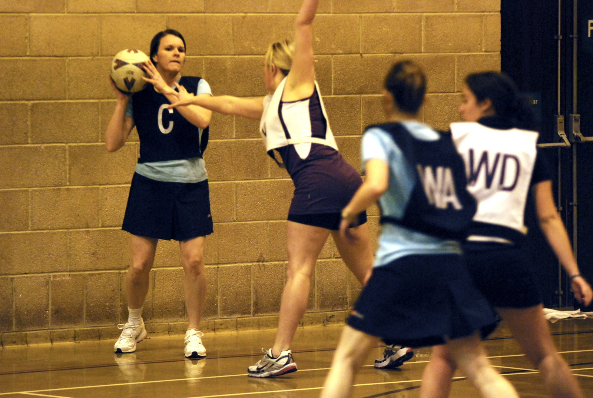
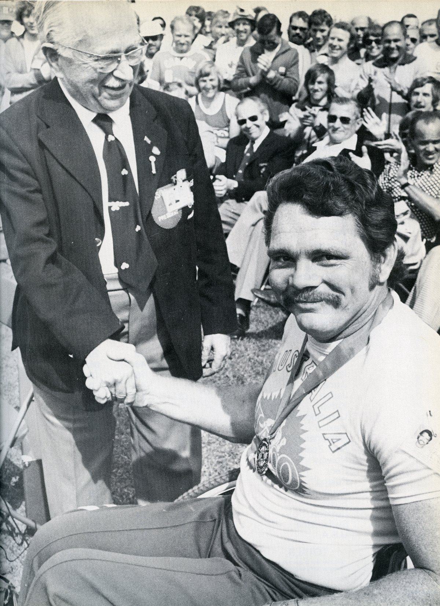
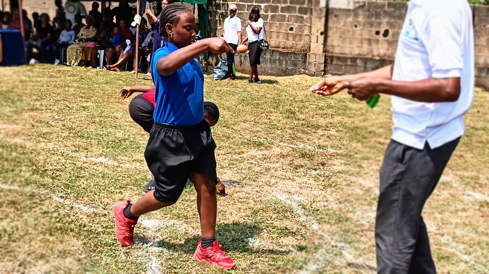
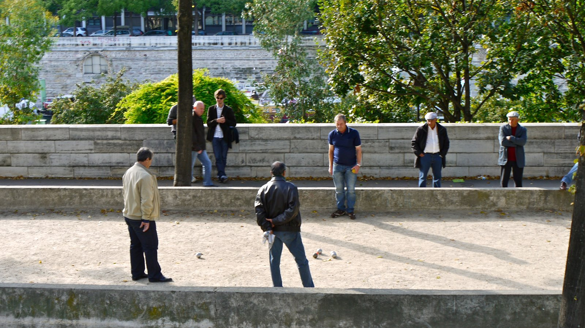

Without JavaScript, all the tabs are shown one after the other.
Introduction
A team can be a netball side, a fire crew, a class or a workshop. This sequence helps students say what they bring to a team, understand and explain rules, talk about roles, tell an inspiring story, plan an event together and welcome a newcomer, in English.
Our question
Rules or trust: what makes a real team?

The skill tags. Every activity shows its skill: CO listening (compréhension de l'oral), CE reading (compréhension de l'écrit), PO speaking (expression orale), PE writing (expression écrite). Every lesson works the four skills.
The Gorse spiral of the sequence
Six questions, one per stage of the sequence, each one narrower than the last, until the point: the question the students answer in their final team pitch.
- 1What is a team?More than people side by side: people who need each other, on a pitch, in a class or in a workshop.
- 2Why do we need rules?Rules make a game fair and safe; in Rio, two rivals showed that fair play goes further than the rules.
- 3Who does what in a team?Samaia's crew knows every role before the bells go: trust is prepared.
- 4What can a team give to a person?At Stoke Mandeville, sport gave patients a new start; Margaret Maughan became a champion, then a coach.
- 5How do we organise something together?A plan, roles, a plan B: going to and will.
- 6Can I explain our rules to someone new?Pétanque was changed for a friend who could not run: rules can welcome people.
At the point. Rules or trust: what makes a real team? Students answer it in their team pitch: rules alone do not make a team, trust alone is fragile; good rules are the ones that build trust and let everybody play.
Programme and level
- Programme: langues vivantes, voie professionnelle (CAP and baccalauréat professionnel), arrêté du 3 avril 2019, Bulletin officiel spécial n° 5 du 11 avril 2019.
- Contexts: main context, daily, personal, social and civic life (sport, rules, respect, commitment); second context, professional life (working in a team, as in a fire crew, a sports centre, a workshop or a kitchen).
- Level: A2 at the start of Seconde professionnelle, towards B1 (CEFR). The dys version and the help boxes give access from A1+.
- Activities: listening, reading, speaking (in interaction and continuous), writing, and mediation, which the programme names: « présenter, exposer, expliquer, expliciter, rendre compte, résumer, reformuler, traduire » (lesson 7).
- Follow-up: the programme suggests an « outil de suivi individuel (journal, carnet de bord, portfolio) »: here, the « Team file ».
- Length: eight lessons of 52 minutes, about four weeks. Lessons 5 and 8 are assessments.
The five directives of the programme, and where they are worked
1. All four skills, for the tools of the language
« La pratique de toutes les activités langagières est indispensable à l'acquisition des outils de la langue (vocabulaire, grammaire, syntaxe, prononciation) »
Every lesson works CO, CE, PO and PE, and every lesson has a Language focus: grammar, lexis and pronunciation, practised and graded.
2. Sounds and spellings
« l'étude du rapport entre mots écrits et mots prononcés (à savoir le lien et les éventuelles distances entre phonie et graphie) constitue une étape indispensable vers une meilleure maîtrise de la langue »
A pronunciation point in each lesson: /ŋ/, can and can't, weak have to, years and dates, won't and want, /θ/ and /ð/.
3. Writing to remember
« le recours à l'écrit permet la mémorisation, le réemploi et la fixation des acquis »
Flashcards, a written record in every lesson, and the « Team file », the student's portfolio that becomes the final pitch and charter.
4. Understandable, not perfect
« Ce n'est pas l'authenticité parfaite de la langue parlée par un locuteur natif qui est visée. Il s'agit avant tout de lever les éventuels blocages et inhibitions chez l'élève et d'assurer une expression compréhensible. »
Speaking in pairs and small groups first, assessed orals recorded in pairs or groups, a « Taking a correction » routine and an emotional storm tab.
5. Authentic documents
« ces documents, qu'ils soient textuels, iconographiques, sonores ou audiovisuels, sont nécessairement authentiques, variés et richement représentatifs de la réalité quotidienne, sociale, économique, professionnelle, culturelle, etc. du ou des pays dont on étudie la langue. »
Four real videos of the National Careers Service (England), a job profile, The National Archives (UK), a Voice of America report from Stoke Mandeville, texts from the English-speaking world, and photos from England, Australia and Nigeria.
Quotations: programme de langues vivantes de la voie professionnelle, 2019 (in French, as published).
Objectives
- Talk about the sports and the teams in your life.
- Understand and explain the rules of a game, and say what is allowed or not.
- Talk about roles and responsibilities with must, have to, should.
- Tell a true story in the past: a fair-play moment, a Paralympic life.
- Plan an event together with going to and will.
- Explain a French document in English to a newcomer (mediation).
- Present your team and its fair-play charter in a two-minute pitch.
The eight lessons
| Lesson | Title | Documents | Production | Language focus |
|---|---|---|---|---|
| 1 | My sport, my team | Greg (PE teacher), NCS; four team sports | five-line sport profile (diagnostic) | present simple, like + -ing, play / do / go, the sound /ŋ/ |
| 2 | Fair play: what are the rules? | two runners in Rio (script); the rules of netball | three fair-play rules | can / can't for rules, imperatives, can and can't |
| 3 | A team at work and on the pitch | Samaia (firefighter), NCS; sports coach profile | my role card | must, have to, should; mustn't and don't have to; weak forms |
| 4 | Inspiring athletes: a Paralympic story | Margaret Maughan; Voice of America, Stoke Mandeville | a portrait of an inspiring person | past simple and time markers; saying years and dates |
| 5 | Mid-sequence assessment: rules, roles and stories | Isaac (lifeguard), NCS; wheelchair rugby | four skills /10 + language /10 | graded language part of the mid-sequence assessment |
| 6 | Organising a school sports event | a voice message (script); sports day | a sign-up notice | going to and will; short forms |
| 7 | Mediation: explaining a French game to a newcomer | Jamie's message (script); how pétanque was born; French rules | a rules card for visitors | instructions: sequencers, imperatives, comparatives and superlatives; /θ/ and /ð/ |
| 8 | Final task: our team pitch and our fair-play charter | Greg, part 2; The National Archives, Guttmann | team pitch /20, charter /20, language /20 | graded language part of the final assessment |
Assessments at a glance
- Lesson 1: diagnostic of the four skills, not part of the term average.
- Every lesson: a graded language check of 6 to 8 minutes (/6 to /8), with answer key and self-check grid.
- Lesson 5, mid-sequence: CO /10, CE /10, PO /10 (role play recorded in pairs), PE /10, and a separate language part /10 (written × 0.5 + pronunciation /3).
- Lesson 6: « Taking a correction » sheet, /5.
- Lesson 8, final: CO /10, CE /10, PO /20 (team pitch recorded in groups), PE /20 (fair-play charter, with a language checklist worth 2 points), and a separate language part /20 (grammar /8, lexis /6, pronunciation /6).
Details, grids and keys: tab « Assessments ».
About the documents
The videos and job profiles are authentic British documents of the National Careers Service (England), and the text on Ludwig Guttmann comes from The National Archives (UK), all reused under the Open Government Licence v3.0. The Voice of America report (2012) is in the public domain and is reproduced in full. The texts on sports are adapted from Wikipedia (CC BY-SA 4.0), with the revision consulted. Three short documents were written for this sequence and say so: the Rio script (from BBC News and Associated Press reports), Mr Dawson's message and Jamie's message. The French pétanque rules were written for the class; you can replace them with your own school's.
The fair-play moment of lesson 2 and the Paralympic history of lessons 4 and 8 are presented as facts, without any polemic about sport or politics.
Downloads
Teacher's sheet: the whole sequence
PDF · Word · LibreOffice
Student sheets, one activity per page
PDF · Word · LibreOffice
Student sheets in large print
PDF · Word · LibreOffice
Dys version
PDF · Word · LibreOffice
Assessments: student papers
PDF · Word · LibreOffice
Answer keys and marking grids (teacher)
PDF · Word · LibreOffice
Taking a correction and self-check
PDF · Word · LibreOffice
The documents of the sequence (transcripts, texts and photos)
PDF · Word · LibreOffice
To go further
Other sequences on this site, to use before or after this one (they are not repeated here):
- Adrian Mole, Seconde bac pro: rules at school and at work, and another form of mediation (explaining in French what a text says).
- S'exprimer en anglais sur le lieu de travail (A2-B1): the dialogue with a customer, safety signs and must / mustn't at work.
- Learning a Job and Keeping Going to School: Dual-Track Curriculum: the tools and the words of each trade.
- For students who want more: the National Careers Service, sports coach, and the International Paralympic Committee, history (link only).
So that the sequences do not repeat each other, the mediation of lesson 7 is not a translation: one student explains a French document in English to a « newcomer » who only speaks English and checks, with a list of questions, that they can play.
© 2026 Madame Carole Paoli Pompougnac · CC BY-NC-SA 4.0
Student sheets (PDF) Word LibreOffice
Lesson 1. My sport, my team
Four skills today: CO 8 min · CE 8 min · PO 20 min · PE 16 min. Total: 52 minutes, the last three minutes of the 55 are left for moving and tidying up.
Objectives: talk about the sports and the teams in your life (present simple, like / love / hate + -ing, play / do / go); meet Greg, a PE teacher who was a professional footballer; discover four team sports of the English-speaking world; give the teacher a first picture of your listening, reading, speaking and writing (diagnostic, not part of the term average).
Materials: this page on the interactive whiteboard; student sheet 1; the video « From professional footballer to teacher: Greg's story » (link below, with the transcript as plan B); blank flashcards; a folder or a notebook section called « Team file ».
Timed plan
| Minutes | Skill | What happens | What the teacher says or does |
|---|---|---|---|
| 0-4 | PO | Entry ritual. Students come in, sit down, write the date and the lesson title. On the board, the sentence of the day: « A team is not only for sport. » Two students recall a flashcard from the last lesson, aloud. | I greet every student at the door in English. I read the sentence twice, slowly. I ask: « Which teams are you in? » Students answer with one word: a club, a class, a family, a group of friends, a workshop. |
| 4-12 | CO | Listening. Greg's story, from the start to « ...what I was passionate about » (about one minute), twice. Students tick what Greg says, then compare in pairs. | « You will not understand every word. Nobody does the first time. Listen for numbers, sports and jobs. » |
| 12-20 | CE | Reading. Four team sports: netball, cricket, rugby union, goalball. Match each sport with its facts. | « These sports are played all over the English-speaking world. Find the number of players first. » |
| 20-24 | PE PO | Language focus, the short lesson: present simple, like / love / hate + -ing; play, do or go + sport; the sound /ŋ/. | « In French you say « je fais du foot ». In English it is « I play football ». And « je fais du judo »? » |
| 24-27 | PE PO | Language focus, practice: play, do or go; repetition of -ing words. | I make the class repeat in chorus, then in rows, then two volunteers. |
| 27-33 | PE | Language focus, graded check (/6), then self-check grid. | « Six minutes, on your own. Then tick the grid honestly. » |
| 33-42 | PO | Speaking (diagnostic). In pairs: « My sport, my team » in five sentences. The teacher walks round with the diagnostic grid. | « Speak to your partner, not to me. Your partner says one thing they remember. » |
| 42-49 | PE | Writing (diagnostic). My sport profile, five lines. Then two flashcards. | « Write what you can say. Short sentences are fine. You do not need to be sporty: a team can be a class or a workshop. » |
| 49-52 | PO | Exit ritual « Pass it on ». Each student says one sentence to a partner: « I like ... and my team is ... » Then they write it in their « Team file » and copy the homework. | A speaks, then B. I listen to four or five pairs, I do not correct in public. I check that the homework is written down. |
CO · Meet Greg CO
For the teacher. Play from 0:00 and stop after « ...what I was passionate about » (about one minute), twice. Do not show the transcript. After the second listening, students compare in pairs for one minute, then we check. If the video does not play in your school, read paragraphs 1 to 3 of the transcript (Documents tab) aloud, at a natural pace, twice.
For students.
Video: « From professional footballer to teacher: Greg's story » (2 min 30), National Careers Service, YouTube channel « Get careers information and advice ». Watch from the start to « ...what I was passionate about ».
First listening. Tick what you hear.
| Greg says... | Tick |
|---|---|
| his name | |
| his job today | |
| his first job | |
| the age when he left school | |
| the name of his football club | |
| what he studied later |
Second listening. Complete.
- Greg is a ____________ teacher.
- He started out as a professional ____________.
- He left school at ____________.
- Later, he did a ____________ degree.
- B1 challenge: why did Greg decide to do something else in his mid twenties?
Answer key (teacher)
Ticked: name, job today, first job, age when he left school, what he studied. Not said: the name of his club.
- PE (physical education).
- footballer.
- 16.
- sports science.
- He knew that football « probably wasn't going to last forever »: he wanted a life after football, linked to what he loved.
Diagnostic levels: A1 = football and teacher; A2 = 16 and sports science; B1 = the reason for the change.
CE · Four team sports CE
For the teacher. Students read alone for four minutes, then compare. Let them use the lexicon. Show the hero photo (goalball): ask who has seen goalball before. Goalball is the only sport here with no equivalent for sighted players: everybody wears eyeshades.
For students.
Four team sports
1 Netball. Netball is a ball sport played on a rectangular court by two teams of seven players. The players shoot a ball through the other team's goal ring. It is played mostly by women and girls, especially in schools and in the Commonwealth.
2 Cricket. Cricket is a bat-and-ball game played between two teams of eleven players on a field. In the centre of the field there is a pitch, 20 metres long, with a wicket at each end. A bowler from one team bowls the ball; a batter from the other team tries to hit it and run.
3 Rugby union. Rugby union is a close-contact team sport that started at Rugby School, in England, in the 19th century. Players run with the ball in their hands. There are two teams of 15 players and an oval ball, on a rectangular field called a pitch.
4 Goalball. Goalball is a team sport for athletes with a vision impairment. Teams of three try to throw a ball with bells inside it into the other team's goal. All the players wear eyeshades, so everybody plays on an equal footing: they use the sound of the ball.
Adapted and shortened for the class from the Wikipedia article « Netball » (revision 1384663471, consulted on 15 November 2026), licence CC BY-SA 4.0. Adapted and shortened for the class from the Wikipedia article « Cricket » (revision 1385763203, consulted on 15 November 2026), licence CC BY-SA 4.0. Adapted and shortened for the class from the Wikipedia article « Rugby union » (revision 1384446528, consulted on 15 November 2026), licence CC BY-SA 4.0. Adapted and shortened for the class from the Wikipedia article « Goalball » (revision 1374739121, consulted on 15 November 2026), licence CC BY-SA 4.0.
- a court
- a playing area with a hard floor (netball, basketball, tennis)
- a pitch
- a playing area with grass (football, rugby); in cricket, the strip in the centre
- to shoot
- to try to score
- to bowl
- to throw the ball in cricket
- a vision impairment
- a problem with seeing; some players are blind
- eyeshades
- a mask that covers the eyes
- on an equal footing
- with the same chances
| Sport | Players in a team | Ball or other object | One special fact |
|---|---|---|---|
| Netball | |||
| Cricket | |||
| Rugby union | |||
| Goalball |
Which sport would you like to try? Why? ________________________________
Answer key (teacher)
| Sport | Players | Ball | Special fact |
|---|---|---|---|
| Netball | 7 | a ball; a goal ring | played mostly by women and girls, in the Commonwealth |
| Cricket | 11 | a ball and a bat | a pitch of 20 metres with a wicket at each end |
| Rugby union | 15 | an oval ball | it started at Rugby School, in England; players run with the ball in their hands |
| Goalball | 3 | a ball with bells inside | for athletes with a vision impairment; everybody wears eyeshades |
Accept short answers and key words.
PO · My sport, my team (diagnostic) PO
For the teacher. Pairs, seated. A speaks, B listens and says back one detail; then swap. Walk round with the diagnostic grid (Assessments tab) and listen to six or seven students; complete the grid for the others in lessons 2 and 3. A student who does no sport talks about another team: a class, a band, a workshop, a family, a video game team.
For students.
Use these starters.
- My name is... / You can call me...
- I play... / I do... / I go... (or: I don't do any sport, but...)
- I like / I love / I don't like ...-ing because...
- My team is... (a club, my class, my workshop, my family...)
- In my team, I am the one who...
- B1: The best moment with my team was when...
Listener. Say one thing you remember: « You love... »
Answer key (teacher)
A2 model: « My name is Lina. I play handball in a club in Dijon. I love playing on Saturdays because I see my friends. My team is twelve girls and our coach. In my team, I'm the one who makes people laugh. » B1 adds a memory: « The best moment was when we won a match after losing the first half. »
PE · My sport profile (diagnostic) PE
For the teacher. This text is kept in the « Team file ». It is the first piece of the final team pitch. Do not mark the spelling today; note the three most frequent problems of the class for lesson 2.
For students.
Write five lines. You can use a first name or an alias.
| My sentence | |
|---|---|
| Who I am | |
| A sport or an activity I do (play / do / go) | |
| What I like or don't like, and why | |
| A team I belong to | |
| What I bring to a team |
Two flashcards. Front: a word or a chunk. Back: its meaning and a sentence about you. Example: front « I'm good at... » / back « je suis doué pour... · I'm good at passing the ball. »
Answer key (teacher)
Diagnostic, not graded. Note for each student: sentence with a verb (yes / no), play / do / go, -ing after like, capital « I ». These notes choose the focus of the language checks.
Language focus · present simple, like + -ing, play / do / go, the sound /ŋ/ PEPO
For students. Language focus: the short lesson.
Grammar
Present simple for habits: I play football every Saturday. She plays netball. (he, she, it: + -s). Negative: I don't play cricket. He doesn't play.
like, love, enjoy, hate + verb-ing: I love playing. I don't like running.
- play + ball and team sports: play football, play netball, play cricket, play rugby.
- do + individual activities and martial arts: do judo, do athletics, do gymnastics, do archery.
- go + activities in -ing: go swimming, go running, go cycling.
Lexis
- A team: a player, a teammate, a captain, a coach, a club, a match, a training session.
- Places: a court (netball, basketball), a pitch (football, rugby), a pool, a track, a field.
- Remember: « le sport » = sport (uncountable): I like sport, not « I like the sport ».
Pronunciation
The sound /ŋ/. In playing, running, swimming, the end is one soft sound /ŋ/, like the end of « parking ». Do not add a /g/: swimming /ˈswɪmɪŋ/.
Word stress. NETball · CRICKet · RUGby · GOALball · TEAMmate · CAPtain.
Practice.
- Complete with play, do or go: I ___ judo. · We ___ netball. · They ___ swimming. · She ___ athletics. · He ___ rugby. · I ___ running.
- Repeat after your teacher, faster and faster: playing, running, swimming, cycling.
- Tell your partner: « I love ...-ing, but I don't like ...-ing. »
Answer key (teacher)
do · play · go · does · plays · go. Repetition: no /g/ at the end of the -ing words.
Graded language check (6 minutes, /6).
- Complete: I ___ football on Saturdays. (play / do / go) (1)
- Complete: She ___ judo. (play / do / go, with the right ending) (1)
- Complete: We ___ swimming in summer. (1)
- Correct the mistake: « I like play cricket. » (1)
- Write one sentence about Greg: his job today. (1)
- Write one sentence about you and a team. (1)
Answer key and marking (teacher)
1 play · 2 does · 3 go · 4 I like playing cricket. · 5 e.g. Greg is a PE teacher. · 6 e.g. I play in a handball team. / My class is my team. One point per item; half a point if the verb is right but the sentence has another error. /6.
Self-check grid.
| I can... | Yes | Not yet |
|---|---|---|
| choose play, do or go | □ | □ |
| use like + -ing | □ | □ |
| say /ŋ/ without a /g/ | □ | □ |
Written record
Copy into your notebook.
What I keep. Greg was a professional footballer and he is now a PE teacher: sport opened a door to another job. A team can be a club, a class or a workshop. I play team sports, I do individual activities, I go swimming or running. After like, love and hate, I use -ing: I love playing.
Homework
Work at home.
Say your five-line profile aloud twice at home (you can record it if you want, it is not compulsory). Learn your two flashcards: look at the front, say the back, turn, check.
Emotional storm
Some students do not like sport, or are often left out when teams are chosen. Say it clearly: « This sequence is about teams, not about being good at sport. » A student can talk about a class, a workshop, a band, a family or an imaginary team. Never ask students to choose teams in front of the class: the teacher makes the groups.
Emergency exits (plan B)
- No video or no sound: read paragraphs 1 to 3 of Greg's transcript (Documents tab) aloud, twice.
- The class is very quiet: the speaking task is done in writing first, then whispered to a partner.
- Eight-minute exit (if the lesson starts late): 2 min CO (the teacher reads « I play football. I love running. I go swimming. »), 2 min CE (the first line of each sport), 2 min PO (one sentence each to a partner), 2 min PE (two lines of the profile).
Lesson 1 · Dys version
Today. I listen to Greg. I read about four sports. I say what I like.
- Greg was a: footballer / swimmer. (circle)
- Today, Greg is a: teacher / doctor. (circle)
- A netball team has: 7 / 11 players. (circle)
- Complete with play, do or go: I ___ football. I ___ swimming.
- Complete: I like ________-ing. My team is ________.
Help: the teacher reads the questions aloud. I can answer with one word. I have one third more time.
© 2026 Madame Carole Paoli Pompougnac · CC BY-NC-SA 4.0
Student sheets (PDF) Word LibreOffice
Lesson 2. Fair play: what are the rules?
Four skills today: CO 8 min · CE 9 min · PO 18 min · PE 16 min. Total: 52 minutes, the last three minutes of the 55 are left for moving and tidying up.
Objectives: understand a true fair-play story told in English; read the main rules of a sport from the English-speaking world (netball); say what you can and cannot do in a game (can / can't, imperatives); write three fair-play rules for a class match.
Materials: student sheet 2; the script « Two runners in Rio » (the teacher reads it); the text « The main rules of netball » and the photo of a netball match; a ball (optional) to show the three-second rule.
Timed plan
| Minutes | Skill | What happens | What the teacher says or does |
|---|---|---|---|
| 0-4 | PO | Entry ritual. Students come in, sit down, write the date and the lesson title. On the board, the sentence of the day: « Get up. We have to finish this. » Two students recall a flashcard from the last lesson, aloud. | I greet every student at the door in English. I ask: « Who could say this? When? » Students guess: a coach, a friend, a parent, a teammate. |
| 4-12 | CO | Listening. « Two runners in Rio », read by the teacher, twice. Students put the events in order, then answer. | « This is a true story from the Olympic Games. Listen for who helps who. » |
| 12-21 | CE | Reading. The main rules of netball, with a photo of a match. True or false, then find the rule. | « You are going to read real rules. Use the photo: what do the letters on the bibs mean? » |
| 21-25 | PE PO | Language focus, the short lesson: can / can't for what is allowed; imperatives (pass, don't run); can /kən/ and can't /kɑːnt/. | « In netball, you can pass the ball. You can't run with it. Listen to the difference between can and can't. » |
| 25-28 | PE PO | Language focus, practice: can or can't? Listen and raise one or two fingers. | I say ten sentences; one finger for can, two for can't. |
| 28-35 | PE | Language focus, graded check (/8), then self-check grid. | « Seven minutes. Then tick the grid. » |
| 35-43 | PO | Speaking. « One rule, one reason »: explain one rule of a sport you know to your partner, and say why the rule is fair. | « Your partner must guess the sport. Then they ask: why? » |
| 43-49 | PE | Writing. Three fair-play rules for our class match, with « Don't... » and « You can't... ». | « Short and clear: a rule must be understood in five seconds. » |
| 49-52 | PO | Exit ritual « Pass it on ». Each student says one sentence to a partner: « In ..., you can't ... because ... » Then they write it in their « Team file » and copy the homework. | A speaks, then B. I listen to four or five pairs, I do not correct in public. I check that the homework is written down. |
CO · Two runners in Rio CO
For the teacher. Read the script (Documents tab) at a calm, natural speed, twice. Before listening, read the six events with the class. After the first listening, pairs put the events in order; after the second, they answer the questions. To go further at home, students can listen to the two athletes on BBC World Service (link in the script source).
For students.
First listening. Put the events in order (1 to 6).
| Event | Order |
|---|---|
| The two women hug at the finish line. | |
| Two runners collide and fall. | |
| D'Agostino helps Hamblin to get up. | |
| They receive a Fair Play Award. | |
| D'Agostino falls again; Hamblin waits for her. | |
| Hamblin lies on the track, in tears. |
Second listening. Answer.
- Where and when does the story happen?
- Which countries are the two runners from?
- What does D'Agostino say to Hamblin?
- B1 challenge: they did not win. Why is this a story about a team?
Answer key (teacher)
Order: collide and fall (1), Hamblin in tears (2), D'Agostino helps (3), D'Agostino falls again and Hamblin waits (4), the hug (5), the award (6).
- In Rio de Janeiro, at the Olympic Games, in August 2016 (the women's 5,000 metres).
- New Zealand (Hamblin) and the United States (D'Agostino).
- « Get up. We have to finish this. »
- They were rivals, but for a few minutes they acted like teammates: each one helped the other. Fair play goes further than the rules.
CE · The rules of netball CE
For the teacher. Show the photo first: students find the letters C, WA, WD, GA. Then they read alone (4 min) and do the true or false in pairs. If you have a ball, show the three-second rule with a volunteer: catch, count, pass.
For students.
Photo · A netball match in England

The main rules of netball
1 The aim of the game is to score more goals than the other team. A goal is scored when a player in the shooting circle shoots the ball through the goal ring. The ring is 3.05 metres high and has no backboard.
2 Each team has seven players on the court. Each player has a position, and the position decides where the player can go. A bib shows the position with one or two letters: GS (goal shooter), GA (goal attack), WA, C (centre), WD, GD, GK (goal keeper). Only two players of each team can go into each shooting circle.
3 At the start of every quarter, and after every goal, a centre pass starts the game again. The centre passes alternate between the two teams.
4 Players move the ball by passing it. A player can hold the ball for only three seconds. A player cannot run with the ball: the ball must be released before the foot they were standing on touches the ground again.
5 Contact between players is only allowed if it does not stop an opponent or the game. When a player defends, they must stand at least 90 centimetres away from the player with the ball. After illegal contact, the player who made the contact must stand out of play until the penalty pass is taken.
6 A normal game has four quarters of 15 minutes.
Adapted and shortened for the class from the Wikipedia article « Netball » (revision 1384663471, consulted on 15 November 2026), licence CC BY-SA 4.0.
- the shooting circle
- the half-circle in front of each goal
- a backboard
- the board behind a basketball ring
- a bib
- a light top with letters, worn over a shirt
- to alternate
- to happen in turn: one team, then the other
- to release
- to let go of
- an opponent
- a player of the other team
- illegal
- not allowed by the rules
- a quarter
- one of the four parts of a game
True or false? Correct the false sentences.
- A netball team has eleven players on the court.
- A player can hold the ball for three seconds.
- A player can run with the ball.
- All the players can go into the shooting circle.
- A defender must stand at least 90 centimetres away from the player with the ball.
- A game has two halves of 30 minutes.
Answer key (teacher)
- False: seven players.
- True.
- False: she must release the ball before her foot touches the ground again; she cannot run with it.
- False: only two players of each team can go into each shooting circle.
- True.
- False: four quarters of 15 minutes.
Bonus: C = centre, WA = wing attack, WD = wing defence, GA = goal attack.
PO · One rule, one reason PO
For the teacher. Pairs. A explains one rule of a sport (or of a game, a video game, a card game) without naming it; B guesses the sport and asks « Why is this rule fair? ». Swap. Walk round and complete the diagnostic grid for students not heard in lesson 1.
For students.
- In this sport, you can... / you can't...
- Don't... / You must not...
- If you..., the other team gets...
- This rule is fair because... (it protects the players / it gives everybody a chance / it stops cheating)
Listener: guess the sport, then ask « Why is this rule fair? »
Answer key (teacher)
A2 model: « In this sport, you can't touch the ball with your hands, only the goalkeeper can. If you touch it, the other team gets a free kick. This rule is fair because everybody plays with the same body parts. » (football) B1: « Without this rule, the game would be completely different. »
PE · Three fair-play rules for our class match PE
For the teacher. These three rules go into the « Team file »: they are the first draft of the fair-play charter of the final task. Collect five sheets to use in lesson 3 for the correction code.
For students.
Our class plays a match against another class. Write three fair-play rules: one with « Don't... », one with « You can't... », one with « Always... ». Add a reason for one rule (because...).
Answer key (teacher)
Model: « 1. Don't shout at the referee. 2. You can't play without your bib. 3. Always shake hands at the end of the match, because we play with them, not against them. »
Language focus · can / can't for rules, imperatives, can and can't PEPO
For students. Language focus: the short lesson.
Grammar
can / can't + verb (no « to », no -s): what is allowed or not allowed. A player can hold the ball for three seconds. You can't run with the ball. She can't go into the circle.
Imperative for instructions and rules: verb alone. Pass the ball! Stand 90 centimetres away. Negative: Don't + verb: Don't run with the ball. Don't push.
Lexis
- Rules: a rule, to allow, allowed, not allowed, a foul, a penalty, a free pass, a referee (football, rugby), an umpire (netball, cricket, tennis), a whistle.
- Actions: to pass, to catch, to throw, to shoot, to score, to defend, to hold, to release.
- Fair play: to shake hands, to respect, to cheat, to help, a rival, an opponent.
Pronunciation
can or can't? In a sentence, can is weak and short: /kən/, You can pass. can't is strong and long: /kɑːnt/, You CAN'T run. The vowel makes the difference, because the final t is often very soft.
Practice.
- Can or can't? A netball player ___ pass the ball. · She ___ run with the ball. · Only two players ___ go into the shooting circle. · A defender ___ stand too close.
- Write two rules with Don't for a class match.
- Listen to the teacher: one finger for can, two fingers for can't.
Answer key (teacher)
can · can't · can · can't. Don't: e.g. Don't push. Don't shout at the umpire.
Graded language check (7 minutes, /8).
- Complete with can or can't: A netball player ___ hold the ball for three seconds. (1)
- Complete with can or can't: A player ___ run with the ball. (1)
- Correct the mistake: « You can to pass the ball. » (1)
- Correct the mistake: « She cans play. » (1)
- Write a negative imperative: (push) ________ your opponent. (1)
- Translate: « l'arbitre » in netball. (1)
- Translate: « serrer la main ». (1)
- In « You CAN'T run », which word is strong: can't or run? (1)
Answer key and marking (teacher)
1 can · 2 can't · 3 You can pass the ball. · 4 She can play. · 5 Don't push · 6 the umpire (referee accepted) · 7 to shake hands · 8 can't. One point each, /8.
Self-check grid.
| I can... | Yes | Not yet |
|---|---|---|
| say what is allowed with can and can't | □ | □ |
| write a rule with Don't | □ | □ |
| hear the difference between can and can't | □ | □ |
Written record
Copy into your notebook.
What I keep. In Rio, two rivals helped each other: fair play goes further than the rules. Rules say what you can and can't do: You can't run with the ball. Instructions use the imperative: Pass! Don't push! In netball, the referee is called an umpire.
Homework
Work at home.
Learn the eight action verbs of the lexis (pass, catch, throw, shoot, score, defend, hold, release). Find one more fair-play story (from a match you saw, a club, or the news) and prepare two sentences to tell it.
Emotional storm
Talking about falls and injuries can upset a student who has been hurt in sport. The Rio story ends well: both runners finish and are rewarded. If a student mentions bad behaviour in their own club (insults, pressure), thank them, do not discuss it in front of the class, and talk to them at the end of the lesson; refer to the CPE if needed.
Emergency exits (plan B)
- Reading too difficult: give only paragraphs 2 and 4, and the photo.
- The class is excited by the competition theme: do the speaking task in writing first.
- Eight-minute exit: 2 min CO (the teacher reads the last paragraph of the script), 2 min CE (three true or false), 2 min PO (one rule to a partner), 2 min PE (one rule with Don't).
Lesson 2 · Dys version
Today. I listen to a story from Rio. I read the rules of netball. I write rules.
- The story happens in: Rio / London. (circle)
- The two runners: help each other / shout at each other. (circle)
- A netball team has: 7 / 15 players. (circle)
- In netball, you ___ run with the ball. (can / can't)
- Write one rule: Don't ________.
Help: the teacher reads the script slowly a third time for me. I have one third more time.
© 2026 Madame Carole Paoli Pompougnac · CC BY-NC-SA 4.0
Student sheets (PDF) Word LibreOffice
Lesson 3. A team at work and on the pitch
Four skills today: CO 8 min · CE 8 min · PO 20 min · PE 16 min. Total: 52 minutes, the last three minutes of the 55 are left for moving and tidying up.
Objectives: understand how a real crew of firefighters works together; read what a sports coach must know and do; talk about roles and responsibilities with must, have to, should, mustn't and don't have to; write your own role card for a team.
Materials: student sheet 3; the video « Firefighter: Samaia's story »; the job profile « Sports coach » (National Careers Service); six role cards (captain, coach, timekeeper, kit manager, scorer, first-aid helper) printed for the speaking task.
Timed plan
| Minutes | Skill | What happens | What the teacher says or does |
|---|---|---|---|
| 0-4 | PO | Entry ritual. Students come in, sit down, write the date and the lesson title. On the board, the sentence of the day: « You can't do everything on your own. » Two students recall a flashcard from the last lesson, aloud. | I greet every student at the door in English. Two students recall a flashcard. I ask: « Who said something similar in lesson 2? » (D'Agostino: « We have to finish this. ») |
| 4-12 | CO | Listening. Samaia's story, from « You only work in like kind of teams... » to « ...what needs to happen » (about forty seconds), twice. A crew, a parade, a role. | « Samaia works in a team of four, five or six. Listen: what happens at the start of every shift? » |
| 12-20 | CE | Reading. The job profile of a sports coach: skills, requirements, tasks. Sort them. | « This is a real careers website from England. Find what a coach needs, and what a coach does. » |
| 20-24 | PE PO | Language focus, the short lesson: must, have to, should; mustn't and don't have to; weak forms. | « A coach has to pass background checks: it is an obligation. A coach should give feedback: it is good advice. » |
| 24-27 | PE PO | Language focus, practice: obligation, advice or forbidden? | I say a sentence, the class shows a card: O (obligation), A (advice), F (forbidden). |
| 27-33 | PE | Language focus, graded check (/8) and self-check grid. | « Six minutes. » |
| 33-42 | PO | Speaking. « Who does what? »: in groups of four or six, each student draws a role card and explains their responsibilities; the group checks that nothing is forgotten. | « Two sentences each: one with have to, one with should. » |
| 42-49 | PE | Writing. My role card for the class team: three responsibilities and one piece of advice. Two flashcards. | « Your card will be used in the final task. » |
| 49-52 | PO | Exit ritual « Pass it on ». Each student says one sentence to a partner: « In a team, the ... has to ... » Then they write it in their « Team file » and copy the homework. | A speaks, then B. I listen to four or five pairs, I do not correct in public. I check that the homework is written down. |
CO · Samaia and her crew CO
For the teacher. Play the extract from « You only work in like kind of teams... » to « ...what needs to happen » twice (paragraphs 6 and 7 of the transcript, about forty seconds). Then, if the class is ready, play paragraph 8 (the gaffer) once more for the B1 question. Plan B: read paragraphs 6 to 8 of the transcript aloud.
For students.
Video: « Firefighter: Samaia's story » (2 min), National Careers Service, YouTube channel « Get careers information and advice ». Watch the extract chosen by your teacher.
- How many people are there in a crew on a fire engine? (Write the numbers you hear.)
- Complete: « how close you work ____________ and how much you know how each other ____________ is so important ».
- What does Samaia love?
- What happens at « parade », at the start of the shift?
- B1 challenge: who is the « gaffer », and what does the gaffer do?
Answer key (teacher)
- 4 or 5 on a fire engine; 6 as a crew, or 8 as a crew overall.
- together · works
- working with her crew; arriving at a job when everybody knows what to do and « springs into action ».
- The crew stands together and goes through each person's role for the day: what you are going to do, your focus, what needs to happen.
- The person in charge that day: he or she explains what is expected of each person, which drill they are doing, which visits they make in the community.
CE · What a sports coach needs and does CE
For the teacher. Students read alone (4 min), then complete the table in pairs. Point out « You'll need to pass enhanced background checks »: this is an obligation of the law, not a choice. Link with the vocational courses: in many jobs, the same skills are needed (communication, attention to detail, initiative).
For students.
Sports coach: the job profile (extract)
1 Sports coaches teach sports skills to individuals and teams of all abilities.
2 Skills and knowledge. You'll need: leadership skills; the ability to teach pupils how to do something; the ability to monitor performance; excellent verbal communication skills; to be thorough and pay attention to detail; the ability to use your initiative.
3 Restrictions and requirements. You'll need to pass enhanced background checks as you may work with children and vulnerable adults. You may need a first aid certificate for some jobs.
4 Day-to-day tasks. As a sports coach, you could: plan fun, engaging and safe coaching activities and sessions; give feedback on performance and how to improve skills and technique; motivate and inspire your students to fulfil their potential; support performers at events and competitions.
5 Working environment. You could work at a fitness centre, on a sports field, at a university, at a school or at a college. Your working environment may be physically demanding and outdoors in all weathers.
National Careers Service (England), job profile « Sports coach », nationalcareers.service.gov.uk/job-profiles/sports-coach, extracts (consulted on 15 November 2026). Contains public sector information licensed under the Open Government Licence v3.0.
- abilities
- levels (beginners, good players...)
- to monitor
- to watch and check regularly
- thorough
- careful, complete
- initiative
- the ability to decide and act without being told
- background checks
- checks of a person's past, for example a criminal record
- feedback
- comments to help somebody improve
- to fulfil their potential
- to become as good as they can be
| Skills a coach needs (3) | Obligations (2) | Tasks a coach does (3) |
|---|---|---|
- Where can a sports coach work? Name three places.
- Why does a sports coach need background checks?
- Which skill is also important in your future job? Why?
Answer key (teacher)
| Skills | Obligations | Tasks |
|---|---|---|
| leadership skills | pass enhanced background checks | plan fun, engaging and safe sessions |
| excellent verbal communication | have a first aid certificate (for some jobs) | give feedback on performance |
| attention to detail, initiative... | motivate and inspire students; support performers at events |
- three of: a fitness centre, a sports field, a university, a school, a college.
- Because a coach may work with children and vulnerable adults.
- Personal answer, e.g. « Communication, because in a kitchen we have to understand the orders quickly. »
PO · Who does what? PO
For the teacher. Groups of four to six. Each student draws a role card and speaks for about thirty seconds; the group adds one forgotten responsibility. Do not let one student take all the roles: the cards are drawn. If the group is smaller, one student takes two cards.
For students.
Role cards. Captain · Coach · Timekeeper · Kit manager · Scorer · First-aid helper.
- As the ..., I have to... / I must...
- I should... (good advice)
- I mustn't... (forbidden)
- I don't have to... (not necessary)
- B1: If..., I have to...
Group: add one responsibility that is missing: « You also have to... »
Answer key (teacher)
A2 model (kit manager): « As the kit manager, I have to bring the bibs and the balls. I must count them at the end. I should check the first-aid box. I don't have to be the best player. » B1: « If a ball is missing, I have to tell the coach before we leave. »
PE · My role card PE
For the teacher. The role card goes into the « Team file ». Use the five texts collected in lesson 2 to show the correction code (Taking a correction tab) on the board, anonymously.
For students.
Choose a role in a team (sport, class, workshop, kitchen, garage...). Write your role card: three responsibilities (have to, must), one thing that is forbidden (mustn't), one piece of advice (should).
Two flashcards: « I have to... » and one role (captain, coach, crew...).
Answer key (teacher)
Model: « Role: timekeeper. I have to start the timer at the whistle. I must stop it when the umpire says « time ». I have to tell the coach when there are two minutes left. I mustn't use my phone for anything else. I should stand near the umpire. »
Language focus · must, have to, should; mustn't and don't have to; weak forms PEPO
For students. Language focus: the short lesson.
Grammar
Obligation: must + verb (the speaker decides, or a written rule) and have to / has to + verb (a fact, a law, a job): You'll need to pass background checks: a coach has to pass them.
Advice: should + verb: You should give feedback.
Be careful: mustn't = forbidden (You mustn't push); don't have to = not necessary (You don't have to be the best player). French « tu ne dois pas » is mustn't, not « don't have to ».
Lexis
- Roles: a captain, a coach, a referee, an umpire, a teammate, a crew, a manager, a timekeeper, a scorer, a kit manager.
- Responsibilities: to be in charge of, to look after, to check, to plan, to motivate, to give feedback, to keep the score.
- Skills: leadership, communication, attention to detail, initiative, trust.
Pronunciation
Weak forms. have to sounds /ˈhæftə/ (a /f/, not a /v/); has to sounds /ˈhæstə/. must is short in a sentence: /məst/, You must check. mustn't has no first t: /ˈmʌsnt/.
Practice.
- Obligation, advice or forbidden? · A coach has to pass background checks. · You should drink water. · You mustn't push. · You don't have to be the captain.
- Rewrite with have to: « A firefighter must know the tools. »
- Say three times: I have to · She has to · You mustn't.
Answer key (teacher)
obligation · advice · forbidden · not necessary. A firefighter has to know the tools.
Graded language check (6 minutes, /8).
- Complete: A coach ___ to pass background checks. (have / has) (1)
- Complete with should or mustn't: You ___ drink water during training. (1)
- Complete with should or mustn't: You ___ push your opponent. (1)
- Translate: « Tu n'es pas obligé d'être le capitaine. » (1)
- Correct the mistake: « She musts check the kit. » (1)
- Correct the mistake: « We have check the balls. » (1)
- Name two roles in a team. (1)
- How do you say « have to »: /hævtuː/ or /hæftə/? (1)
Answer key and marking (teacher)
1 has · 2 should · 3 mustn't · 4 You don't have to be the captain. · 5 She must check the kit. · 6 We have to check the balls. · 7 two of: captain, coach, referee, umpire, timekeeper, scorer, kit manager... · 8 /hæftə/. One point each, /8.
Self-check grid.
| I can... | Yes | Not yet |
|---|---|---|
| say an obligation with have to | □ | □ |
| give advice with should | □ | □ |
| explain the difference between mustn't and don't have to | □ | □ |
Written record
Copy into your notebook.
What I keep. In Samaia's crew, everybody knows their role: at « parade », they go through what each person has to do. A sports coach has to pass background checks and should give feedback. have to = obligation; should = advice; mustn't = forbidden; don't have to = not necessary.
Homework
Work at home.
Learn the difference between mustn't and don't have to with one example each, on a flashcard. Read your role card aloud twice, with the weak form of have to.
Emotional storm
Role cards can create tension: a student may refuse a role, or another may want to be the captain every time. Roles are drawn at random and change in each lesson. A student who is not comfortable speaking in the group can take the role of scorer and speak last.
Emergency exits (plan B)
- No video: read paragraphs 6 to 8 of Samaia's transcript aloud, twice.
- Groups are noisy: pairs instead of groups, two cards per pair.
- Eight-minute exit: 2 min CO (the teacher reads paragraph 7), 2 min CE (three skills of a coach), 2 min PO (one sentence with have to), 2 min PE (two lines of the role card).
Lesson 3 · Dys version
Today. I listen to Samaia, a firefighter. I read about a sports coach. I say what I have to do.
- Samaia is a: firefighter / coach. (circle)
- She works in a: crew / shop. (circle)
- A sports coach needs: communication skills / a car. (circle)
- Complete: A coach ___ to pass background checks. (have / has)
- Complete: In my team, I have to ________.
Help: role cards with pictures; the teacher reads the questions aloud. I have one third more time.
© 2026 Madame Carole Paoli Pompougnac · CC BY-NC-SA 4.0
Student sheets (PDF) Word LibreOffice
Lesson 4. Inspiring athletes: a Paralympic story
Four skills today: CO 7 min · CE 9 min · PO 20 min · PE 16 min. Total: 52 minutes, the last three minutes of the 55 are left for moving and tidying up.
Objectives: read the life of Margaret Maughan, Britain's first Paralympic champion, and understand a news report from Stoke Mandeville, where the Paralympic Games began; tell a life story with the past simple and time markers; interview a partner about a past event; write a short portrait of an inspiring person.
Materials: student sheet 4; the text « Margaret Maughan, Britain's first Paralympic champion »; the photo of Ludwig Guttmann with Eric Russell (1976); the Voice of America report (the teacher reads paragraphs 1 to 6); a timeline drawn on the board (1928, 1959, 1960, 1980, 2012).
Timed plan
| Minutes | Skill | What happens | What the teacher says or does |
|---|---|---|---|
| 0-4 | PO | Entry ritual. Students come in, sit down, write the date and the lesson title. On the board, the sentence of the day: « It lets you know what you can do. » (Christopher Haynes, 2012) Two students recall a flashcard from the last lesson, aloud. | I greet every student at the door in English. I show the hero photo again (goalball, 1996) and the photo of 1976. I ask: « What do you know about the Paralympic Games? » One-word answers. |
| 4-13 | CE | Reading. Margaret Maughan: a timeline in five dates. Then questions. | « Read the dates first. Each date is a step in her life. » |
| 13-20 | CO | Listening. Voice of America, Stoke Mandeville, 2012: paragraphs 1 to 6, read by the teacher, twice. Numbers and reasons. | « This is a real news report. Listen for numbers first, then for the idea of Dr Guttmann. » |
| 20-24 | PE PO | Language focus, the short lesson: past simple (regular, irregular, negative, questions with did); time markers; saying years and dates. | « Margaret was born in 1928. She won a gold medal in 1960. Did she win? Yes, she did. » |
| 24-27 | PE PO | Language focus, practice: say the years; ask a question with did. | I write five years on the board; the class says them in chorus. |
| 27-33 | PE | Language focus, graded check (/8) and self-check grid. | « Six minutes. » |
| 33-42 | PO | Speaking. Interview in pairs: a journalist and Margaret Maughan in 1960, after the gold medal. Questions with did, answers in the past. | « The journalist asks four questions with did. Margaret answers with the text. Then swap. » |
| 42-49 | PE | Writing. A portrait of an inspiring person in 60 to 80 words (an athlete, a coach, a member of your family, a worker you met), in the past simple. | « Three dates or time markers, three actions, one reason why this person inspires you. » |
| 49-52 | PO | Exit ritual « Pass it on ». Each student says one sentence to a partner: « ... inspires me because ... » Then they write it in their « Team file » and copy the homework. | A speaks, then B. I listen to four or five pairs, I do not correct in public. I check that the homework is written down. |
CE · Margaret Maughan CE
For the teacher. Students read alone (4 min) and complete the timeline, then answer in pairs. Present the photo of 1976 as a link: Guttmann, the doctor of the text, still came to the Games 28 years after the first competition. Keep a respectful vocabulary: « a person with a disability », « a wheelchair user ».
For students.
Margaret Maughan, Britain's first Paralympic champion
1 Margaret Maughan was born in Preston, in the north of England, in 1928. Her father was a miner. She became a teacher, and she also taught archery.
2 In 1959, she had a road accident in Nyasaland (now Malawi). After the accident, she could not walk. She returned to Britain and she was treated at Stoke Mandeville Hospital, where Dr Ludwig Guttmann used sport in therapy. There, she took up archery again and she joined an archery club. She said that archery helped her to keep her balance in her wheelchair.
3 In 1960, she went to Rome with the British team for the first Paralympic Games. She won Britain's first ever Paralympic gold medal, in archery. She also won a race in swimming: she was the only competitor, so she won when she completed the 50 metres.
4 Travelling was not easy. The British athletes were moved onto the plane to Rome with forklift trucks, and soldiers carried them up and down the stairs of their residence.
5 Margaret Maughan competed in five Paralympic Games, from 1960 to 1980, in archery, dartchery and lawn bowls. Later, she worked as a coach at the Stoke Mandeville club. In 2012, she lit the Paralympic flame at the opening ceremony of the London Paralympic Games. She died in 2020, at the age of 91.
Adapted and shortened for the class from the Wikipedia article « Margaret Maughan » (revision 1361724212, consulted on 15 November 2026), licence CC BY-SA 4.0.
- a miner
- a man who works in a mine
- archery
- shooting arrows with a bow (tir à l'arc)
- to take up
- to start a sport or a hobby
- a forklift truck
- a machine that lifts heavy things
- dartchery
- a mix of darts and archery
- lawn bowls
- a game like pétanque, on grass
- to light, lit, lit
- to start a fire or a flame
Photo · Ludwig Guttmann and an athlete, 1976

| Date | What happened? |
|---|---|
| 1928 | |
| 1959 | |
| 1960 | |
| 1980 | |
| 2012 |
- Where was Margaret Maughan treated after her accident?
- How did archery help her?
- Why was travelling to Rome difficult?
- B1: why is the swimming race a surprising victory?
Answer key (teacher)
| Date | What happened? |
|---|---|
| 1928 | She was born in Preston. |
| 1959 | She had a road accident in Nyasaland (Malawi) and could not walk. |
| 1960 | She won Britain's first Paralympic gold medal, in archery, in Rome. |
| 1980 | Her last Paralympic Games (five Games from 1960 to 1980). |
| 2012 | She lit the Paralympic flame in London. |
- At Stoke Mandeville Hospital.
- It helped her to keep her balance in her wheelchair.
- The buildings and transport were not accessible: forklift trucks lifted the athletes onto the plane; soldiers carried them up the stairs.
- She was the only competitor: she won because she completed the 50 metres. The real victory is to take part and finish.
CO · Where the Games began CO
For the teacher. Read paragraphs 1 to 6 of the Voice of America report (Documents tab) at a natural speed, twice. It is American English: « kilometers », « physical therapists », « program ». The whole report is in the Documents tab; strong students can read the end (Christopher Haynes) at home.
STOKE MANDEVILLE, Britain: The Paralympic Games, which end Sunday in London, have been the largest such event in history, with nearly 4,300 athletes from 160 countries taking part over 12 days. The idea of competitive sports for disabled people had its origins 60 years ago, at a British hospital only 75 kilometers from London's Olympic Park.
At Britain’s National Spinal Injuries Center, they are proud of their link to the Paralympics. While patients these days learn how to live after crippling trauma, with the constant help of physical therapists, the Games are not far from their minds.
“We know some of those people competing, and we know that their journey started here, so we’re behind them all the way,” said Dott Tussler, the Head of Physical Therapy. She said the hospital still uses sports as an important part of its rehabilitation program.
“We use sport as a vehicle for improving balance, strength, coordination, wheelchair skills and wheelchair mobility," said Tussler. "As well as those physical attributes, you can then go on to build the fun element of doing things together in a group.”
They do that at a sports facility next door, dedicated to the refugee doctor who came to Britain from Nazi Germany and introduced the concept of sports for disabled people.
Dr. Ludwig Guttmann believed that sports would help heal his patients, physically and emotionally, and that an international disabled games would help heal the wounds of the war.
For students.
- How many athletes took part in the London 2012 Paralympic Games? From how many countries?
- How far is Stoke Mandeville from London's Olympic Park?
- Complete: « We use sport as a vehicle for improving balance, ____________, coordination... »
- Who was Dr Ludwig Guttmann? (two details)
- B1 challenge: according to the report, what did Guttmann believe about sport? (two ideas)
Answer key (teacher)
- nearly 4,300 athletes, from 160 countries.
- only 75 kilometres.
- strength.
- two of: a refugee doctor; he came to Britain from Nazi Germany; he introduced sport for disabled people.
- Sport would help heal his patients, physically and emotionally; international games would help heal the wounds of the war.
PO · An interview in Rome, 1960 PO
For the teacher. Pairs. A is a journalist, B is Margaret Maughan just after her gold medal; then swap with an athlete of their choice (real or imaginary). Remind them that the journalist is respectful: questions about the sport and the journey, not about the accident.
For students.
- Journalist: Congratulations! When did you start archery? · Did you train at Stoke Mandeville? · How did you travel to Rome? · Did you expect to win?
- Athlete: I started... · Yes, I did. / No, I didn't. · We travelled by... · I felt...
- B1: Ask one more question of your own, with « Why did you... ? » or « What did you... ? »
Answer key (teacher)
A2 model: « Journalist: When did you start archery? Margaret: I started before my accident; I taught archery. J: Did you train at Stoke Mandeville? M: Yes, I did. It helped my balance. J: How did you travel to Rome? M: We travelled by plane. They lifted us with forklift trucks! »
PE · An inspiring person PE
For the teacher. The portrait goes into the « Team file ». A student can choose a person from their family, a coach or a worker met on placement: inspiring does not mean famous. Collect five portraits to prepare the mid-sequence correction.
For students.
Write 60 to 80 words about a person who inspires you. Use three time markers (in..., when..., later, after that, ... ago), three actions in the past simple, and one reason (because...).
Answer key (teacher)
Model (72 words): « My grandfather was a mechanic in Toulouse. He started work when he was sixteen. In 1985, he opened his own garage with two friends. He didn't have much money, but he worked hard and he trained three apprentices. Later, one of them became his partner. He retired ten years ago, but he still helps young people in the village. He inspires me because he always shared what he knew. »
Language focus · past simple and time markers; saying years and dates PEPO
For students. Language focus: the short lesson.
Grammar
Past simple for finished actions at a known time. Regular: she competed, she joined, she returned. Irregular: be → was, have → had, win → won, go → went, take → took, light → lit.
Negative and questions with did + verb (no -ed): She didn't walk again. Did she win? Yes, she did.
Time markers: in 1960, on 29 July 1948, in the 1950s, when..., after the accident, later, then, ten years ago. ago comes after the time: sixty years ago.
Lexis
- Sport and disability: a disability, an impairment, a wheelchair, a wheelchair user, accessible, rehabilitation.
- Competition: to compete, a competitor, a medal (gold, silver, bronze), to win, a champion, the Paralympic Games, an opening ceremony.
- Respectful words: « a person with a disability », « a wheelchair user » (not « handicapped person » or « confined to a wheelchair »).
Pronunciation
Years. Say them in two parts: 1928 = nineteen twenty-eight; 1960 = nineteen sixty; 2012 = twenty twelve (or two thousand and twelve); 2005 = two thousand and five.
Dates. 29 July 1948 = the twenty-ninth of July, nineteen forty-eight. Stress the big syllable: NINEteen SIXty.
Practice.
- Say: 1944 · 1960 · 1976 · 2012 · 2020.
- Past simple: win → ___ · take → ___ · light → ___ · compete → ___
- Make a question: (she / win / a medal in 1960?)
Answer key (teacher)
nineteen forty-four · nineteen sixty · nineteen seventy-six · twenty twelve (two thousand and twelve) · twenty twenty. won · took · lit · competed. Did she win a medal in 1960?
Graded language check (6 minutes, /8).
- Past simple: win → ____ (1)
- Past simple: take → ____ (1)
- Complete: Margaret ____ (be) born in 1928. (1)
- Negative: She walked again. → She ________ again. (1)
- Question: Did she ____ (win) a gold medal? (1)
- Put ago in the right place: « She died ago six years. » → ________ (1)
- Write 1960 in words, as you say it. (1)
- Give a respectful expression for a person who uses a wheelchair. (1)
Answer key and marking (teacher)
1 won · 2 took · 3 was · 4 didn't walk · 5 win · 6 She died six years ago. · 7 nineteen sixty · 8 a wheelchair user (a person with a disability accepted). One point each, /8.
Self-check grid.
| I can... | Yes | Not yet |
|---|---|---|
| tell a life story in the past simple | □ | □ |
| ask a question with did | □ | □ |
| say a year in English | □ | □ |
Written record
Copy into your notebook.
What I keep. The Paralympic Games began at Stoke Mandeville, in England, where Dr Ludwig Guttmann used sport to help his patients. Margaret Maughan won Britain's first Paralympic gold medal in Rome, in 1960, and lit the flame in London in 2012. To tell a story: past simple + time markers (in 1960, later, ten years ago); questions with did: Did she win? Yes, she did.
Homework
Work at home.
Revise lessons 1 to 4 for the mid-sequence assessment: flashcards, the four written records, the self-check grids. Learn the five dates of Margaret Maughan's life and say them aloud.
Emotional storm
A student may live with a disability, or have a relative who does. Never ask a student to talk about their own body or health. The lesson is about sport and achievement; the vocabulary is respectful. If a student wants to share something, it is their choice, at the end of the lesson. The VOA report mentions war and injuries: read paragraph 5 calmly and move on to the questions.
Emergency exits (plan B)
- Reading too long: paragraphs 1 to 3 only, and the timeline with three dates.
- The report is too fast: read paragraphs 1, 3 and 6 only, three times.
- Eight-minute exit: 2 min CE (the timeline), 2 min CO (paragraph 1, numbers), 2 min PO (one question with did), 2 min PE (two sentences of the portrait).
Lesson 4 · Dys version
Today. I read about Margaret Maughan. I listen to a news report. I tell a story in the past.
- Margaret Maughan was: British / American. (circle)
- In 1960 she won a: gold medal / car. (circle)
- The Paralympic Games began in: Stoke Mandeville / Paris. (circle)
- Past simple: win → w____
- Complete: My inspiring person is ________. In ________, he / she ________.
Help: the timeline is already drawn on my sheet. The teacher reads the report a third time for me. I have one third more time.
© 2026 Madame Carole Paoli Pompougnac · CC BY-NC-SA 4.0
Student sheets (PDF) Word LibreOffice
Lesson 5. Mid-sequence assessment: rules, roles and stories
Four skills today: CO 7 min · CE 9 min · PO 18 min · PE 18 min. Total: 52 minutes, the last three minutes of the 55 are left for moving and tidying up.
Objectives: show what you can do after four lessons: understand a lifeguard talking about teamwork (CO /10), read about a Paralympic sport (CE /10), explain the rules and roles of a team to a new player in a recorded role play (PO /10), write a message to a coach (PE /10); a separate language part (/10).
Materials: the assessment sheet (Assessments PDF); the video « Lifeguard: Isaac's story »; the text « Wheelchair rugby »; school tablets or the school's recording tool for the role play (or the rota described in the Assessments tab).
Timed plan
| Minutes | Skill | What happens | What the teacher says or does |
|---|---|---|---|
| 0-3 | PO | Entry ritual, short. The teacher explains the order of the parts and the marks, written on the board. | « Four skills, then the language part. You can do it: you have practised every part. » |
| 3-10 | CO | CO: Isaac's story, twice. Questions (/10). | I play the video twice, with one minute between the two listenings. |
| 10-19 | CE | CE: Wheelchair rugby. Questions (/10). | « Read the questions first. » |
| 19-31 | PO | PO: role play in pairs, recorded at the same time on school devices: the captain welcomes a new player (/10). | Pairs record simultaneously; I walk round and check that every device records. |
| 31-41 | PE | PE: a message to a coach (/10). | « Eighty words. Use the checklist at the end. » |
| 41-49 | PE | Language part: graded check (/10 after conversion), alone. | « Eight minutes. » |
| 49-52 | PO | Exit ritual « Pass it on »: one thing I did well today, said to a partner. | I collect the papers and check the recordings are saved. |
CO · Isaac's story (assessed, /10) CO
For the teacher. Play the video twice (1 min 40). Students read the questions first. Plan B: the transcript read aloud twice.
For students.
Video: « Lifeguard: Isaac's story » (1 min 40), National Careers Service, YouTube channel « Get careers information and advice ».
- What is Isaac's job, and where does he spend most of his time? (2)
- Why do lifeguards rarely need to save people in the water? (2)
- Complete: « You can't do everything on ____________. » Why do they have radios? (2)
- What qualification do you need, and how long is the course? (2)
- What always makes Isaac smile? (2)
Answer key (teacher)
- a lifeguard (a flexible worker); sitting, watching the pool.
- Because they are trained to spot hazards and problems before they happen, to prevent them.
- your own; to communicate, to talk to each other and trust each other when there are lots of people.
- the NPLQ (National Pool Lifeguard Qualification); about 7 days.
- People who progress week after week: some do not want to touch the water at first, and a few months later they swim lengths.
One point per element; accept short answers and key words.
CE · Wheelchair rugby (assessed, /10) CE
For students.
Wheelchair rugby
1 Wheelchair rugby is a team sport for athletes with a disability. It is played in more than twenty-five countries and it is a summer Paralympic sport.
2 Five Canadian wheelchair athletes created it in 1976, in Winnipeg. At that time, wheelchair basketball was the most common team sport for wheelchair users. But players with impairments in their arms and legs could not easily dribble or throw the ball into a high ring, so they often had only small roles in the team. The five Canadians wanted a sport where these players could play a full part.
3 The game is played indoors, on a hardwood court. Physical contact between wheelchairs is allowed. Players cannot kick the ball: they must carry it towards the goal in their wheelchair. The ball is round, not oval.
4 In the oldest version, there are four players against four. Its first name was « murderball », because it was so physical. Today the sport is governed by World Wheelchair Rugby, created in 1993.
Adapted and shortened for the class from the Wikipedia article « Wheelchair rugby » (revision 1381687782, consulted on 15 November 2026), licence CC BY-SA 4.0.
- a disability
- un handicap
- an impairment
- a loss of function (in the arms, the legs, the eyes...)
- to dribble
- to bounce the ball while you move
- a full part
- a real, complete role
- hardwood
- a hard type of wood
- governed by
- organised and controlled by
- Who created wheelchair rugby, where and when? (2)
- Why was wheelchair basketball difficult for some players? (2)
- Can players kick the ball? How do they move it towards the goal? (2)
- How many players are there in a team in the oldest version, and what was its first name? (2)
- In your opinion, why is wheelchair rugby a good example of team spirit? Give one reason from the text. (2)
Answer key (teacher)
- five Canadian wheelchair athletes; in Winnipeg (Canada); in 1976.
- They had impairments in their arms and legs, so they could not easily dribble or throw the ball into a high ring; they had small roles.
- No; they carry it in their wheelchair.
- four (four against four); « murderball ».
- e.g. it was created so that every player could play a full part; contact and passes need the whole team.
PO · Welcome to the team (assessed, /10) PO
For the teacher. Pairs, recorded at the same time on school devices, about two minutes per pair. A is the captain, B is a new player who asks questions; then they swap roles if time allows (each student is marked on their main role). Students say their alias at the start. Recordings stay in the school and are deleted after marking.
For students.
A, the captain. Welcome the new player. Explain the sport or the activity (your choice), two rules (can / can't, Don't...), the roles in the team (has to, should), and tell one short story about the team in the past.
B, the new player. Introduce yourself, ask at least three questions (Can I...? Do I have to...? What did you...?), and say what you can bring to the team.
Answer key (teacher)
| Criterion | Points |
|---|---|
| Task: rules, roles and a past story (A) or questions and a contribution (B) | /4 |
| Interaction: listens, answers, reacts | /3 |
| Language: can, have to, should, past simple, question forms | /3 |
Pronunciation is marked in the language part (/3). Model (captain, A2): « Hi, welcome to the netball team! I'm Sara, the captain. In netball, you can't run with the ball. Don't push. You have to stay in your area. Our coach is Mr Diallo; you should listen to him. Last year, we won the school cup! »
PE · A message to a coach (assessed, /10) PE
For students.
You want to join a sports club or a team (any sport or activity). Write a message of 70 to 90 words to the coach, Ms Harper: introduce yourself; say what you like and what you do (present simple); tell one experience in a team (past simple); ask two questions about the rules or the training.
Before I hand in, I check: □ capital I and names □ -s with he, she, it □ like + -ing □ past simple in my story □ question marks.
Answer key (teacher)
| Criterion | Points |
|---|---|
| Format: greeting, closing, name | /2 |
| Introduction and what I like | /2 |
| One experience in the past simple | /2 |
| Two clear questions | /2 |
| Language and my checklist | /2 |
Model (84 words): « Dear Ms Harper, My name is Noah and I'm a student at the lycée professionnel in Rennes. I love playing basketball and I go running on Sundays. Last year, I played in a team at my old school: we didn't win many matches, but we always helped each other. I would like to join your club. Do I have to bring my own ball? Can I come to a training session on Wednesday? Thank you, Noah. »
Language focus · graded language part of the mid-sequence assessment PE
For students. Language focus: the short lesson.
Grammar
To revise (lessons 1 to 4): play / do / go; like + -ing; present simple -s; can / can't; imperatives; must, have to, should, mustn't, don't have to; past simple and questions with did; time markers.
Lexis
Sports and places; rules and fair play; roles in a team; disability and competition, with respectful words.
Pronunciation
Marked from your recorded role play (/3): can and can't; the weak form of have to; years and dates; -ing without /g/.
Practice.
Practice was done at home (homework of lesson 4) with the self-check grids of lessons 1 to 4.
Graded language check (8 minutes, /14).
- Complete with play, do or go: I ___ swimming. (1)
- Correct: « She like playing netball. » (1)
- Complete with can or can't: In netball, you ___ run with the ball. (1)
- Negative imperative: (shout) ________ at the umpire. (1)
- Complete: A coach ___ to pass background checks. (1)
- Translate: « Tu n'es pas obligé de venir. » (1)
- Translate: « Tu ne dois pas pousser. » (1)
- Past simple: win → ____ (1)
- Question: (she / take part / in 1960?) (1)
- Complete: The Games began sixty years ____. (1)
- Name two roles in a team. (1)
- Translate: « un arbitre » in netball. (1)
- Give a respectful expression: a person who uses a wheelchair. (1)
- Write 1948 as you say it. (1)
Answer key and marking (teacher)
1 go · 2 She likes playing netball. · 3 can't · 4 Don't shout · 5 has · 6 You don't have to come. · 7 You mustn't push. · 8 won · 9 Did she take part in 1960? · 10 ago · 11 two of: captain, coach, timekeeper, scorer... · 12 an umpire · 13 a wheelchair user · 14 nineteen forty-eight. Written part /14, multiplied by 0.5 = /7; plus pronunciation /3 from the recording: language mark /10.
Self-check grid.
| I can... | Yes | Not yet |
|---|---|---|
| understand a worker talking about teamwork | □ | □ |
| explain rules and roles to a new player | □ | □ |
| write a message with two questions | □ | □ |
Written record
Copy into your notebook.
What I keep. I can now talk about my sport and my team, explain rules and roles, and tell a story in the past. I will take my correction in the next lesson, step by step.
Homework
Work at home.
No new homework: rest! Bring your « Team file » next lesson.
Emotional storm
Recording is stressful for many students. Allow a student to turn their back to the class or to record facing the wall. A student who blocks can record later with the teacher alone, at an appointment. Say: « Nobody else will hear this recording. It stays in the school. »
Emergency exits (plan B)
- No video: read Isaac's transcript twice.
- No recording devices: rota of pairs at the teacher's desk while the others write; the last pairs at an appointment outside the lesson.
- A student is absent: the same paper at another time; the role play with the teacher as partner.
Lesson 5 · Dys version
Today. I show what I can do. I have one third more time. The questions are read aloud.
- Isaac is a: lifeguard / chef. (circle)
- Isaac says: you can't do everything on your own / you must be the best. (circle)
- Wheelchair rugby was created in: Canada / Italy. (circle)
- My role play: I say two rules and one role.
- My message: Dear ________, my name is ________. I like ________. Can I ________?
Help: sentence starters on the sheet; the teacher reads the text aloud once.
© 2026 Madame Carole Paoli Pompougnac · CC BY-NC-SA 4.0
Student sheets (PDF) Word LibreOffice
Lesson 6. Organising a school sports event
Four skills today: CO 6 min · CE 7 min · PO 18 min · PE 22 min. Total: 52 minutes, the last three minutes of the 55 are left for moving and tidying up.
Objectives: take your correction of the mid-sequence assessment; understand a voice message about a sports day; read about sports days in the English-speaking world; plan an event with going to and will; write a sign-up notice.
Materials: student sheet 6; the corrected mid-sequence papers and the sheet « I take my correction »; the script « A voice message from the PE teacher »; the text « Sports day » and the photo of an inter-house sports day; a planning grid (who, what, when, where, plan B) for each group.
Timed plan
| Minutes | Skill | What happens | What the teacher says or does |
|---|---|---|---|
| 0-3 | PO | Entry ritual. Sentence of the day: « If it rains, we'll move the events into the sports hall. » Two flashcards recalled. | I greet students at the door and give back the papers face down. |
| 3-11 | PE | Taking a correction: steps 1 to 4 of « I take my correction » on the mid-sequence assessment. | « First read all the comments. Then find your errors with the code. » |
| 11-17 | CO | Listening. Mr Dawson's voice message about sports day, read by the teacher, twice. Who, what, when, where, plan B. | « Listen for the date, the time and the three teams. » |
| 17-24 | CE | Reading. Sports day: the text and the photo. Which events would you choose for our school? | « Find four kinds of races. Which ones are funny? Which ones need a team? » |
| 24-28 | PE PO | Language focus, the short lesson: going to for plans, will for decisions and predictions; short forms. | « We're going to have six events: it is already planned. If it rains, we'll move: it is a decision for a possible situation. » |
| 28-31 | PE PO | Language focus, practice: going to or will? | I give two situations; students answer in chorus. |
| 31-37 | PE | Language focus, graded check (/8) and self-check grid. | « Six minutes. » |
| 37-45 | PO | Speaking. Planning meeting in groups of four: each student is responsible for one part (events, teams, timetable, plan B) and presents it to the group. | « Use going to for your plan. If something can go wrong, decide with will. » |
| 45-49 | PE | Writing. A sign-up notice for our event, 40 to 60 words. | « A notice is short: what, when, where, who, how to sign up. » |
| 49-52 | PO | Exit ritual « Pass it on ». Each student says one sentence to a partner: « At our event, we're going to ... » Then they write it in their « Team file » and copy the homework. | A speaks, then B. I listen to four or five pairs, I do not correct in public. I check that the homework is written down. |
PE · I take my correction PE
For the teacher. Students do steps 1 to 4 of the six steps (tab « Taking a correction »). Walk round; do not correct for them. Steps 5 and 6 are homework. The sheet is marked /5.
For students.
Use the sheet « I take my correction » (tab « Taking a correction »). Today: steps 1 to 4. At home: steps 5 and 6.
| Step | Done |
|---|---|
| 1. I read all the comments. | □ |
| 2. I compare my work with the criteria. | □ |
| 3. I find my errors with the code. | □ |
| 4. I rewrite three sentences correctly. | □ |
Answer key (teacher)
Marked /5 (see the tab « Taking a correction »). The three rewritten sentences come from the student's own paper.
CO · Mr Dawson's message CO
For the teacher. Read the script (Documents tab) at a natural speed, twice. The school and the teacher are imaginary. Strong students can also watch Abby's story at home (homework): a duty manager who organises a sports centre.
For students.
Complete the planning card.
| What I hear | |
|---|---|
| What? | |
| When? (day, date, times) | |
| Where? | |
| Six events (write three) | |
| Team 1, team 2, team 3: what are they going to do? | |
| Plan B if it rains | |
| How to sign up, and before when? |
Answer key (teacher)
| Answer | |
|---|---|
| What? | the school sports day |
| When? | Friday 20 June, from one o'clock to four o'clock |
| Where? | on the school field |
| Events | three of: relay race, three-legged race, tug of war, goalball try-out, pétanque challenge, egg and spoon race for the teachers |
| Teams | 1 sets up the field at 12 (cones, lines, tables); 2 welcomes visitors and keeps the scores; 3 takes photos with permission and writes a report |
| Plan B | the events move into the sports hall |
| Sign up | on the sheet in the PE office, before Wednesday |
CE · Sports day CE
For the teacher. Students read alone (3 min) and answer in pairs. The last paragraph presents a debate: let two or three students give their opinion in one sentence, without judging. The photo comes from Nigeria: sports days exist in many English-speaking countries.
For students.
Photo · An inter-house sports day

Sports day
1 Sports day (in British English; « field day » in American English) is an event organised by many schools, and by some offices, in which people take part in competitive sporting activities. The winners often get trophies or prizes.
2 Sports days are often held at the beginning of summer, but also in autumn or spring, especially in countries where the summer is very hot.
3 In schools with a house system, the houses compete against each other: this is called an inter-house sports day.
4 The games are very varied: sprints and longer races for all age groups, egg and spoon races, three-legged races, sack races, wheelbarrow races, and parent and child races. There are also long jumps and high jumps.
5 Some schools have changed their sports days, because they think that they are too competitive and can hurt the self-esteem of pupils who are not good at sport. Other people disagree: for them, competition is part of the fun.
Adapted and shortened for the class from the Wikipedia article « Sports day » (revision 1374453458, consulted on 15 November 2026), licence CC BY-SA 4.0.
- a trophy
- une coupe
- a house system
- the school is divided into teams called houses, with pupils of all ages
- an egg and spoon race
- you run with an egg on a spoon
- a three-legged race
- two runners with one leg tied together
- a sack race
- you jump inside a big bag
- self-esteem
- confidence in your own value
- What is « sports day » called in American English?
- What is an inter-house sports day?
- Name four races that you can find at a sports day.
- Why have some schools changed their sports days? What do other people think?
- Your opinion: should a sports day give prizes to the winners? One sentence.
Answer key (teacher)
- field day.
- The houses (teams of pupils of all ages) compete against each other.
- four of: sprints, longer races, egg and spoon races, three-legged races, sack races, wheelbarrow races, parent and child races.
- They think sports days are too competitive and can hurt the self-esteem of pupils who are not good at sport; others think competition is part of the fun.
- Personal answer with a reason, e.g. « Yes, but every team should get a prize for fair play. »
PO · Our planning meeting PO
For the teacher. Groups of four. Each student takes one part of the planning grid and presents it in about thirty seconds; the group decides together and writes the plan. This plan can become the event of the final team pitch.
For students.
| Part | My notes |
|---|---|
| Events: we're going to have... | |
| Teams and roles: ... is going to... | |
| Timetable: it's going to start at... | |
| Plan B: if it rains / if..., we'll... |
Group: react: « Good idea! » · « I'll do it. » · « What about...? »
Answer key (teacher)
A2 model: « We're going to have a pétanque challenge and a relay race. Team two is going to keep the scores. It's going to start at two o'clock. If it rains, we'll play in the gym. » B1: « I think it will be popular, because everybody can play pétanque. »
PE · A sign-up notice PE
For the teacher. The notice goes into the « Team file ». It can be used as the poster of the final team pitch.
For students.
Write the sign-up notice for your event (40 to 60 words): what, when, where, who can take part, how to sign up, plan B.
Answer key (teacher)
Model (52 words): « Inter-class pétanque challenge! Thursday 12 March, 1 pm to 3 pm, in the school yard. Teams of three, from all classes. We're going to have six courts and a fair-play prize. Sign up with Mr Martin before Monday. If it rains, we'll play in the gym. Come and play: everybody is welcome! »
Language focus · going to and will; short forms PEPO
For students. Language focus: the short lesson.
Grammar
be going to + verb for a plan already decided: We're going to have six events. Team one is going to set up the field.
will + verb for a decision at the moment of speaking, a promise, a possible situation, or a prediction: I'll do it! If it rains, we'll move the events. It will be fun. Negative: won't (will not).
Short forms: I'm going to, we're going to, I'll, we'll, it'll.
Lexis
- An event: a sports day, a tournament, a challenge, a race, a relay, a tug of war, a prize, a trophy.
- Organising: to plan, to set up, to sign up, to welcome, to keep the scores, a timetable, a venue, a volunteer, a poster, a plan B.
- Safety: a first-aid kit, water, shade, permission (for photos).
Pronunciation
Short forms. I'll /aɪl/, we'll /wiːl/, won't /wəʊnt/ (not « want » /wɒnt/). In fast speech, going to often sounds like « gonna »: recognise it when you listen, but write going to.
Practice.
- Going to or will? · The date is fixed: we ___ have the event on Friday. · « The phone is ringing! » « I ___ answer it. » · If it rains, we ___ play inside.
- Say: I'll · we'll · won't · want.
- Tell your partner one plan for next weekend with going to.
Answer key (teacher)
are going to · 'll (will) · 'll (will). won't /wəʊnt/ and want /wɒnt/ are different.
Graded language check (6 minutes, /8).
- Complete with going to: We ________ have a relay race. (1)
- Complete with will: « I'm thirsty. » « I ___ get you some water. » (1)
- Complete: If it rains, we ___ move into the sports hall. (1)
- Negative of will: It ____ be difficult. (1)
- Correct the mistake: « She is going play. » (1)
- Translate: « s'inscrire » (to take part in an event). (1)
- Translate: « une course de relais ». (1)
- Which word sounds /wəʊnt/: won't or want? (1)
Answer key and marking (teacher)
1 are going to · 2 'll / will · 3 will / 'll · 4 won't · 5 She is going to play. · 6 to sign up · 7 a relay race · 8 won't. One point each, /8.
Self-check grid.
| I can... | Yes | Not yet |
|---|---|---|
| talk about a plan with going to | □ | □ |
| make a decision with will | □ | □ |
| say won't and want differently | □ | □ |
Written record
Copy into your notebook.
What I keep. To organise an event, I plan with going to (We're going to have six events) and I decide with will (I'll do it. If it rains, we'll move inside.). A sports day is a tradition in British schools, often between houses. A good notice says what, when, where, who and how to sign up.
Homework
Work at home.
Finish steps 5 and 6 of « I take my correction ». Optional listening: watch « Leisure centre manager: Abby's story » (link in the Documents tab) and note three tasks of a duty manager.
Emotional storm
Getting a mark back can be painful. Give the papers face down, and let students read alone first. A student who is upset can do the correction steps later, with another adult, as agreed. In the planning meeting, check that every student has a part: nobody is left without a role.
Emergency exits (plan B)
- Correction takes longer: skip the practice of the language focus, keep the graded check.
- Groups do not agree: the teacher chooses the event; students plan the details.
- Eight-minute exit: 2 min CO (the first two sentences of the message), 2 min CE (four races), 2 min PO (one plan with going to), 2 min PE (the first line of the notice).
Lesson 6 · Dys version
Today. I take my correction. I listen to a message. I plan an event.
- Sports day is on: Friday / Monday. (circle)
- If it rains, the events go: into the sports hall / home. (circle)
- An egg and spoon race is: a race / a recipe. (circle)
- Complete: We're ________ to have a race.
- My notice: What? ________ When? ________ Where? ________
Help: the planning grid is already drawn; the teacher reads the message a third time for me.
© 2026 Madame Carole Paoli Pompougnac · CC BY-NC-SA 4.0
Student sheets (PDF) Word LibreOffice
Lesson 7. Mediation: explaining a French game to a newcomer
Four skills today: CO 7 min · CE 13 min · PO 16 min · PE 16 min. Total: 52 minutes, the last three minutes of the 55 are left for moving and tidying up.
Objectives: understand a newcomer's questions; read how pétanque was born, a game invented so that a player who could not run could still play; pass on the rules of a French document in English to a person who does not speak French (mediation); write a rules card in English for English-speaking visitors.
Materials: student sheet 7; the script « Jamie's voice message »; the text « How pétanque was born » and the photo of pétanque players in Paris; the French document « Règlement simplifié du tournoi de pétanque du lycée » (you can replace it with your school's own rules); Jamie role cards; if possible, a set of boules and a jack to show the gestures.
Timed plan
| Minutes | Skill | What happens | What the teacher says or does |
|---|---|---|---|
| 0-4 | PO | Entry ritual. Students come in, sit down, write the date and the lesson title. On the board, the sentence of the day: « Can I run before I throw? » Two students recall a flashcard from the last lesson, aloud. | I greet every student at the door in English. I show the photo of pétanque players. I ask: « Who has played pétanque? Who can explain one rule, in English, with gestures? » |
| 4-11 | CO | Listening. Jamie's voice message, read by the teacher, twice. Students note his five questions. | « Jamie is an exchange student from Leeds. Note his questions: you are going to answer them. » |
| 11-19 | CE | Reading. How pétanque was born: a game for a friend who could not run. Questions and new words (jack, roll, circle). | « This is the English for the game you know. Find the word for « cochonnet ». » |
| 19-23 | PE PO | Language focus, the short lesson: sequencers and imperatives for instructions; comparatives and superlatives (closer, the closest); /θ/ and /ð/. | « First, stand in the circle. Then, throw the jack. The team with the closest boule wins the point. » |
| 23-26 | PE PO | Language focus, practice: order the instructions; close, closer, the closest. | I mime a game; the class gives the instruction. |
| 26-32 | PE | Language focus, graded check (/8) and self-check grid. | « Six minutes. » |
| 32-42 | PO CE | Mediation in pairs. A reads the French rules and explains them in English; B plays Jamie, with the questions in English only, and checks that each question is answered. Then swap for the tournament rules. | « You do not translate word for word. You choose what Jamie needs to know to play on Thursday. » |
| 42-49 | PE | Writing. A rules card in English for English-speaking visitors: six short lines. | « Six lines, imperatives and sequencers. A visitor must be able to play after reading it. » |
| 49-52 | PO | Exit ritual « Pass it on ». Each student says one sentence to a partner: « To play pétanque, first you ... then you ... » Then they write it in their « Team file » and copy the homework. | A speaks, then B. I listen to four or five pairs, I do not correct in public. I check that the homework is written down. |
CO · Jamie's questions CO
For the teacher. Read the script (Documents tab) at a natural speed, twice. Students note the questions in English; they will answer them in the mediation task. Jamie is imaginary.
For students.
Note Jamie's questions.
| Jamie wants to know... | |
|---|---|
| Question 1 | |
| Question 2 | |
| Question 3 | |
| Question 4 | |
| Question 5 |
- Where is Jamie from, and when did he arrive?
- When is the tournament?
- When does Jamie want an explanation?
Answer key (teacher)
- How many boules does each player get?
- How far do you throw the jack at the start?
- Can I run before I throw?
- How do you score points?
- What is the final score: when does the game end?
He is from Leeds; he arrived on Monday. The tournament is on Thursday. He wants an explanation tomorrow at lunch.
CE · How pétanque was born CE
For the teacher. Students read alone (4 min), then answer in pairs. Make the link with lesson 4: pétanque, too, was changed so that a player with a disability could play. Keep the French words of the game; students need the English ones for the mediation.
For students.
Photo · Pétanque in Paris

How pétanque was born
1 Pétanque is a boules sport. The players throw their boules towards a small target ball, officially called a jack (in French: cochonnet). The aim is to finish with your boules closer to the jack than the boules of the other team. You can roll your boule close to the jack, or you can hit the other team's boules away. You always throw from inside a circle, with both feet on the ground.
2 At the end of the 19th century, a form of boules called jeu provençal was very popular in France. In this game, players ran three steps before they threw a boule.
3 Jules Lenoir, a jeu provençal player in La Ciotat, near Marseille, had very bad rheumatism: he could not run any more, and he could hardly stand. His friend Ernest Pitiot owned a café. To help Lenoir, Pitiot changed the game: the pitch was about half as long, and the player stood still in a circle instead of running. They called the game « pieds tanqués », feet planted on the ground. The name later became pétanque.
4 The first pétanque tournament took place in La Ciotat in 1910. The game spread quickly: it became the most popular form of boules in France, then it travelled to the rest of Europe and to many countries around the world. Today, there are strong national federations in Germany, Spain and England.
Adapted and shortened for the class from the Wikipedia article « Pétanque » (revision 1381025254, consulted on 15 November 2026), licence CC BY-SA 4.0.
- a target
- what you aim at (une cible)
- the jack
- le cochonnet
- to roll
- to make something move on the ground, turning
- rheumatism
- a disease that makes the joints painful
- could hardly
- could almost not
- to stand still
- to stand without moving
- to spread
- to go to more and more places
- Find the English words for: le cochonnet · pointer (faire rouler) · tirer (frapper les boules adverses).
- In jeu provençal, what did players do before they threw a boule?
- Why did Ernest Pitiot change the game? What were the two changes?
- Where and when was the first tournament?
- B1: why is the story of pétanque a story about team spirit?
Answer key (teacher)
- the jack · to roll (your boule close to the jack) · to hit the other team's boules away.
- They ran three steps.
- To help his friend Jules Lenoir, who had very bad rheumatism and could not run; the pitch was about half as long, and the player stood still in a circle.
- In La Ciotat, in 1910.
- A friend changed the rules so that another person could still play with the group: the rules served the team, not the opposite.
PO · Mediation: Jamie wants to play POCE
For the teacher. Pairs. A has the French document (Documents tab) and explains in English; B has only the Jamie card, in English, and ticks each answer. Then swap: B explains the « Règles du tournoi du lycée », A is Jamie. A does not read the French aloud and does not translate word for word: A chooses and reformulates. This task differs from a translation exercise: success is measured by B, who must be able to play. Walk round and note two good reformulations to share.
For students.
Document en français : règlement simplifié du tournoi de pétanque du lycée
1 Les équipes. On joue en triplette (3 contre 3), en doublette (2 contre 2) ou en tête-à-tête (1 contre 1). En triplette, chaque joueur a 2 boules ; en doublette et en tête-à-tête, chaque joueur a 3 boules.
2 Le but. Le but, ou cochonnet, est une petite boule de bois. On trace un cercle au sol. Un joueur se place dans le cercle, les pieds au sol, et lance le but entre 6 et 10 mètres.
3 La mène. On joue toujours les pieds dans le cercle et sans les décoller du sol (pétanque vient du provençal « pèd tanca », « pieds plantés »). L'équipe qui a lancé le but joue la première boule. Ensuite, c'est l'équipe qui n'a pas le point, c'est-à-dire dont la boule est la plus loin du but, qui joue.
4 Pointer ou tirer. On peut pointer (faire rouler sa boule le plus près possible du but) ou tirer (lancer sa boule pour chasser une boule adverse).
5 Les points. Quand toutes les boules sont jouées, l'équipe gagnante marque un point par boule plus proche du but que la meilleure boule adverse. La partie se joue en 13 points.
6 Règles du tournoi du lycée. Respect de l'adversaire et de l'arbitre ; on mesure en cas de doute ; on ne marche pas sur le terrain pendant qu'un joueur lance ; on serre la main de l'équipe adverse à la fin de la partie.
Document écrit pour la séquence. Les règles du jeu et l'origine du mot sont reprises de l'article Wikipédia « Pétanque » (révision 240967622, consulté le 15 novembre 2026), licence CC BY-SA 4.0 ; le score en 13 points est celui du règlement officiel international. Vous pouvez le remplacer par le règlement de votre propre tournoi.
Student A. Read the French rules. Explain them to Jamie in English. Use gestures if you need to.
Student B, you are Jamie. You do not speak French. Ask your five questions (lesson 7, listening). Tick when you understand the answer.
| Jamie's question | Answered? |
|---|---|
| How many boules? | □ |
| How far is the jack? | □ |
| Can I run? | □ |
| How do we score? | □ |
| When does the game end? | □ |
Useful phrases. In French it's called... · It means... · It's a bit like... · Look, you do this. · Do you see what I mean? · Any other questions?
Answer key (teacher)
Model (A2): « In teams of three, each player has two boules; in teams of two, three boules. First, you draw a circle and you stand in it. Then you throw the jack, between six and ten metres. You can't run: your feet stay on the ground, that's the name, « feet planted ». You can roll your boule close to the jack, or hit the other boules. At the end, you count: one point for each boule closer than the best boule of the other team. The first team with thirteen points wins. And at the end, we shake hands! »
PE · A rules card for visitors PE
For the teacher. The card goes into the « Team file ». The best cards can be displayed for the school tournament or the open day.
For students.
Write a rules card in English for English-speaking visitors at our pétanque tournament: six short lines with sequencers (first, then, after that, finally) and imperatives. Add one fair-play rule.
Answer key (teacher)
Model: « Pétanque in six steps. 1. First, make teams of two or three. 2. Draw a circle and stand in it, feet together. 3. Throw the jack between 6 and 10 metres. 4. Then, roll your boule as close to the jack as you can. 5. After that, count the points: the closest boules win. 6. Finally, the first team to 13 wins, and everybody shakes hands. »
Language focus · instructions: sequencers, imperatives, comparatives and superlatives; /θ/ and /ð/ PEPO
For students. Language focus: the short lesson.
Grammar
Instructions: sequencer + imperative. First, stand in the circle. Then, throw the jack. After that, roll your boule. Finally, count the points.
Comparatives and superlatives (short adjectives): close → closer (than) → the closest; near → nearer → the nearest; irregular: far → further → the furthest; good → better → the best. My boule is closer to the jack than yours. The team with the closest boule scores.
Lexis
- Pétanque: a boule, the jack, a circle, a throw, to throw, to roll, to hit, to aim, to measure, a point, a game, a round (une mène).
- Mediation: In French it's called... · It means... · It's a bit like... · Do you see what I mean?
- False friend: « une partie » (of a game) = a game or a match, not « a party ».
Pronunciation
/θ/ and /ð/. Put your tongue between your teeth and blow: throw /θrəʊ/, three, thirteen (voiceless). The same with voice: the, then, than /ðən/ (voiced). Not « srow », not « ze ».
Practice.
- Put in order: Then, throw the jack. · Finally, count the points. · First, stand in the circle. · After that, roll your boule.
- Complete: close → ______ → the ______ ; far → ______ → the ______
- Say slowly, then fast: Throw three boules, then the jack.
Answer key (teacher)
First, stand in the circle. Then, throw the jack. After that, roll your boule. Finally, count the points. closer, closest; further, furthest.
Graded language check (6 minutes, /8).
- Complete: My boule is ______ (close) to the jack than yours. (1)
- Complete: The team with the ______ (close) boule scores. (1)
- Complete: far → further → the ______ (1)
- Write an instruction with First: (stand / in the circle). (1)
- Write a negative instruction: (run) ________ before you throw. (1)
- Translate: « le cochonnet ». (1)
- Translate: « une partie de pétanque » (not party!). (1)
- Which word starts with /θ/: throw or the? (1)
Answer key and marking (teacher)
1 closer · 2 closest · 3 furthest · 4 First, stand in the circle. · 5 Don't run · 6 the jack · 7 a game of pétanque · 8 throw. One point each, /8.
Self-check grid.
| I can... | Yes | Not yet |
|---|---|---|
| give instructions with first, then, after that, finally | □ | □ |
| use closer and the closest | □ | □ |
| explain a French document in English to a newcomer | □ | □ |
Written record
Copy into your notebook.
What I keep. Pétanque was born in La Ciotat in 1910, when a friend changed the rules so that a player who could not run could still play. To explain a French document, I do not translate word for word: I choose what the other person needs and I check that they understand. Instructions: First... Then... After that... Finally... The closest boule wins: close, closer, the closest.
Homework
Work at home.
Prepare the final team pitch with your group (Assessments tab): choose your event, use your plan of lesson 6 and your three fair-play rules of lesson 2. Each student writes a card of key words for their part (no full text). Revise the self-check grids of lessons 1 to 7.
Emotional storm
Mediation can make a student feel « bad in French » as well as in English. Say it: « You are not translating: you are helping Jamie. Gestures are allowed. » A student who knows pétanque very well can be the expert of the group; a student who has never played asks Jamie's questions and learns at the same time.
Emergency exits (plan B)
- The French document is too long: use only the first two paragraphs (teams, jack) and the points.
- Pairs speak French: B, as Jamie, only understands English; the teacher plays Jamie with one pair as a model.
- Eight-minute exit: 2 min CO (two of Jamie's questions), 2 min CE (the jack, roll, circle), 2 min PO (one rule explained in English), 2 min PE (three lines of the rules card).
Lesson 7 · Dys version
Today. I listen to Jamie. I read how pétanque was born. I explain one rule in English.
- Jamie is from: Leeds / Lyon. (circle)
- Le cochonnet is: the jack / the ball. (circle)
- Pétanque was born in: La Ciotat / Paris. (circle)
- Complete: First, ________ in the circle.
- Complete: The ________ (close) boule wins the point.
Help: a picture card with the circle, the jack and the boules; three phrases ready: « You can't run », « One point for each boule », « Thirteen points to win ». I have one third more time.
© 2026 Madame Carole Paoli Pompougnac · CC BY-NC-SA 4.0
Student sheets (PDF) Word LibreOffice
Lesson 8. Final task: our team pitch and our fair-play charter
Four skills today: CO 7 min · CE 8 min · PO 19 min · PE 18 min. Total: 52 minutes, the last three minutes of the 55 are left for moving and tidying up.
Objectives: show what you can do at the end of the sequence: understand Greg talking about what sport gives (CO /10); read the story of Ludwig Guttmann and the birth of the Paralympic Games (CE /10); present an event and its fair-play charter in a two-minute team pitch (PO /20); write the fair-play charter of five rules (PE /20); a separate language part (/20).
Materials: the assessment sheet (Assessments PDF); the video « From professional footballer to teacher: Greg's story » (paragraphs 6 to 8); the text of The National Archives on Ludwig Guttmann; the groups' cards of key words and their plans (lessons 6 and 7); school tablets or the school's recording tool.
Timed plan
| Minutes | Skill | What happens | What the teacher says or does |
|---|---|---|---|
| 0-3 | PO | Entry ritual, short. The order of the parts and the marks are on the board. | « Today you show your team, your event and your rules. » |
| 3-10 | CO | CO: Greg's story, from « I feel so passionate... » to « ...I'm thriving » (about one minute), twice. Questions (/10). | I play the extract twice, with one minute between the listenings. |
| 10-18 | CE | CE: Sir Ludwig Guttmann and the birth of the Paralympic Games. Questions (/10). | « Read the questions first. » |
| 18-26 | PE | Language part: graded check (/14 written), alone. | « Eight minutes. » |
| 26-36 | PE | PE: our fair-play charter, five rules with a reason each, written individually (/20). | « Your own words, even if your group chose the same rules. » |
| 36-49 | PO | PO: team pitch, two minutes per group, recorded at the same time on school devices, or live in front of the class for volunteer groups (/20). | Each group records in its corner; I go round and check the recordings. |
| 49-52 | PO | Exit ritual « Pass it on »: one thing I learnt about team spirit, said to a partner. | I collect the papers and the devices. |
CO · What sport gives (assessed, /10) CO
For the teacher. Play the extract from « I feel so passionate... » to « ...I'm thriving » (paragraphs 6 to 8 of the transcript) twice. Students know Greg from lesson 1, but this part is new. Plan B: read paragraphs 6 to 8 aloud twice.
For students.
Video: « From professional footballer to teacher: Greg's story » (2 min 30), National Careers Service, YouTube channel « Get careers information and advice ». Watch the extract from « I feel so passionate... » to « ...I'm thriving ».
- According to Greg, what two things can sport give you? (He uses two nouns at the start.) (2)
- What does Greg say to his students when they have difficult moments? (2)
- Name two other skills that sport gives, according to Greg. (2)
- Who sent Greg a letter, and what did this person thank him for? (2)
- What happened to this person in the end? (2)
Answer key (teacher)
- teamwork and cohesion (resilience accepted for one point).
- « You can do this... trust me, you can, keep going. » He tells them about the problems he had.
- two of: communication, being part of something, resilience, skills for life, being employable.
- a student who had left the school; for his support, encouragement and confidence.
- He got an apprenticeship; he is « thriving ».
CE · The birth of the Paralympic Games (assessed, /10) CE
For students.
Sir Ludwig Guttmann and the birth of the Paralympic Games
Extracts; [...] shows a cut.
1 Ludwig Guttmann (1899-1980) was born in Germany in 1899. In 1918, he began a medical degree at the University of Breslau, graduating as a neurologist in 1924. Working in Germany, he became a renowned surgeon specialising in spinal injuries.
2 However, as a German-Jew he faced persecution when the Nazis came to power. [...] In 1939, he and his family were able to flee Germany and safely come to the UK.
3 In the 1940s spinal injuries severely impacted a person’s life and, in many cases, resulted in death due to the development of bed sores. With the increase of injured service-personnel during the Second World War the British government invited Guttmann to set up a specialist spinal unit.
4 The National Spinal Injuries Centre at the Emergency Medical Services Hospital at Stoke Mandeville, Buckinghamshire was opened in 1944, staffed by Guttmann, two nurses and eight orderlies.
5 It was here that he introduced sport as a means to help patients, challenging contemporary approaches to treating spinal injuries. Guttmann’s philosophy was that physical movement was paramount to rehabilitation. He encouraged his patients to undertake sport.
6 [...] Guttmann had organised the very first Stoke Mandeville games, where his patients competed with veterans from the Star and Garter home for ex-servicemen in Richmond, at archery. The competition coincided with the opening of the London Olympics on 29 July 1948.
7 Over the years the competition grew to include more sports and began to expand nationally, becoming international in the 1950s. The games were held annually at Stoke Mandeville Hospital until 1960 when the games were held in the Olympic Venue in Rome, following the Olympics, with Guttmann in attendance.
8 Guttmann’s work at the spinal unit was recognised with an OBE in 1950 and a Knighthood in 1966. [...] In recognition of the origins of the Paralympics at Stoke Mandeville Hospital, the Paralympic mascot at the London 2012 Paralympics was named Mandeville.
The National Archives (UK), « Sir Ludwig Guttmann and the birth of the Paralympic Games », nationalarchives.gov.uk, extracts (consulted on 15 November 2026). Contains public sector information licensed under the Open Government Licence v3.0.
- a neurologist
- a doctor of the nerves and the brain
- persecution
- cruel and unfair treatment of a group
- to flee
- to escape
- bed sores
- wounds caused by lying in bed for a long time
- orderlies
- hospital workers who help nurses
- paramount
- the most important
- to coincide with
- to happen at the same time as
- a Knighthood
- the title « Sir »
- Where was Ludwig Guttmann born, and what was his speciality? (2)
- Why did he leave Germany, and when? (2)
- What did the British government ask him to do, and when did the centre open? (2)
- What happened on 29 July 1948? (2)
- How do we know that Stoke Mandeville is still remembered? Give one fact from the text. (2)
Answer key (teacher)
- in Germany; spinal injuries (he was a neurologist and a surgeon).
- as a German Jew, he faced persecution when the Nazis came to power; in 1939.
- to set up a specialist spinal unit; it opened in 1944 at Stoke Mandeville.
- The first Stoke Mandeville Games (archery) took place, the same day as the opening of the London Olympics.
- The mascot of the London 2012 Paralympics was called Mandeville (his OBE and Knighthood accepted).
PE · Our fair-play charter (assessed, /20) PE
For students.
Write the fair-play charter of the event your group presents (sports day, tournament, class match, workshop challenge). Give it a title, write five rules (can / can't, have to, should, mustn't, imperatives) and one reason for each rule (because..., so that...). End with one sentence about what you are going to do if a rule is broken.
My language checklist (2 points of the mark). I tick and I correct: □ capital letters and full stops □ -s with he, she, it □ can + verb without to □ have to / has to □ mustn't and don't have to □ going to or will in my last sentence.
Answer key (teacher)
| Criterion | Points |
|---|---|
| Title and five clear rules | /5 |
| A reason for each rule | /5 |
| Range of structures: can / can't, have to, should, mustn't, imperative | /4 |
| Last sentence: going to or will | /2 |
| Accuracy of the language | /2 |
| Language checklist done, with at least two corrections visible | /2 |
Model: « The Rainbow Cup fair-play charter. 1. Shake hands before and after every game, because we play with the other team. 2. You can't argue with the umpire: the umpire has the last word. 3. Every player has to play at least ten minutes, so that everybody takes part. 4. You should encourage the other team when they score. 5. Don't laugh at mistakes: everybody is learning. If a player breaks a rule, the captain will talk to them calmly, and they will miss the next game. »
PO · Our team pitch (assessed, /20) PO
For the teacher. Groups of three or four, two minutes per group. Each student speaks for about thirty seconds from a card of key words (no full text). Default: simultaneous recordings in the corners of the room on school devices; volunteer groups may present live. Students say their aliases at the start. Recordings stay in the school and are deleted after marking. Each student is marked individually; one criterion is shared by the group.
For students.
Two minutes, four parts (one part per student; in a group of three, one student takes two parts).
- Our team and our event: who we are, what, when, where (present simple, going to).
- How it works: the roles in our team (has to, should).
- Our fair-play charter: three of our rules, with reasons.
- Why it matters: a story or an example (Rio, Margaret Maughan, pétanque, our class) and our answer to the question « Rules or trust: what makes a real team? »
Use your notice (lesson 6), your role card (lesson 3) and your rules (lesson 2).
Answer key (teacher)
| Criterion | Points |
|---|---|
| My part: content, with details and examples | /6 |
| Fluency: speaks from key words, few long pauses | /4 |
| Interaction in the group: transitions, « Now, X is going to tell you... » | /3 |
| Language: range and accuracy | /4 |
| Group criterion: the pitch is clear, about two minutes, answers the question | /3 |
Pronunciation is marked separately (/6, language part). Model of part 4 (A2+): « Why does it matter? In Rio, two runners stopped their race to help each other. They didn't win, but they finished together. For us, rules are important, because they make the game fair. But trust is more important: without trust, nobody follows the rules. So our answer is: a real team needs rules to build trust. »
Language focus · graded language part of the final assessment PE
For students. Language focus: the short lesson.
Grammar
To revise (the whole sequence): present simple and like + -ing; can / can't; imperatives; must, have to, should, mustn't, don't have to; past simple and did; going to and will; sequencers; comparatives and superlatives.
Lexis
Sports, places and actions; rules and fair play; roles; disability and competition (respectful words); organising an event; pétanque words.
Pronunciation
Marked from your recorded team pitch (/6): -ing without /g/; can and can't; weak have to; years; won't; /θ/ and /ð/.
Practice.
Practice was done at home (homework of lesson 7) with the self-check grids of lessons 1 to 7.
Graded language check (8 minutes, /14).
- Complete with play, do or go: She ___ judo. (1)
- Correct: « I love play netball. » (1)
- Complete with can or can't: In pétanque, you ___ run before you throw. (1)
- Complete: A firefighter ___ to know the tools. (1)
- Translate: « Tu ne dois pas tricher. » (1)
- Past simple: light → ____ (1)
- Question in the past: (Guttmann / organise / the first games?) (1)
- Complete with going to: We ________ have a relay race. (1)
- Complete with will: If it rains, we ___ play inside. (1)
- Complete: My boule is ______ (close) than yours. (1)
- Write an instruction with Finally. (1)
- Translate: « un arbitre » in netball. (1)
- Translate: « s'inscrire » to an event. (1)
- Give a respectful expression for a person who uses a wheelchair. (1)
Answer key and marking (teacher)
1 does · 2 I love playing netball. · 3 can't · 4 has · 5 You mustn't cheat. · 6 lit · 7 Did Guttmann organise the first games? · 8 are going to · 9 will / 'll · 10 closer · 11 e.g. Finally, count the points. · 12 an umpire · 13 to sign up · 14 a wheelchair user. Written part: grammar /8 (items 1 to 11, converted) and lexis /6 (items 12 to 14 × 2); plus pronunciation /6 from the recording: language mark /20.
Self-check grid.
| I can... | Yes | Not yet |
|---|---|---|
| understand a teacher talking about what sport gives | □ | □ |
| present my part of a team pitch from key words | □ | □ |
| write a charter of five rules with reasons | □ | □ |
Written record
Copy into your notebook.
What I keep. Rules make a game fair and safe; trust makes people follow them. In this sequence I met real people who work in teams (Greg, Samaia, Isaac, Abby) and athletes who changed sport (Margaret Maughan, Ludwig Guttmann's patients). In English, I can now explain rules and roles, tell a story, plan an event, explain a French game and present my team.
Homework
Work at home.
Keep your « Team file »: your role card, your rules and your charter can help you on placement and in the oral exam of the bac professionnel. When your work is returned, do the six steps of « Taking a correction ».
Emotional storm
Presenting in a group can create conflicts (a student who did not prepare, a student who wants to say everything). The parts are fixed in advance, one per student; the individual mark does not depend on the others, except the group criterion (/3). A very anxious student can record their part with the teacher alone, later.
Emergency exits (plan B)
- No video: read paragraphs 6 to 8 of Greg's transcript twice.
- No recording devices: live pitches, four or five groups today, then the others next lesson; nobody is marked by a classmate.
- A student is absent: the written parts at another time; the pitch with the teacher, using the group's plan.
- A group is incomplete: the parts are shared again; the group criterion is adapted.
Lesson 8 · Dys version
Today. I show what I can do. I have one third more time. The questions are read aloud.
- Greg says sport gives: teamwork / money. (circle)
- The Stoke Mandeville Games began in: 1948 / 2012. (circle)
- Guttmann was a: doctor / footballer. (circle)
- My charter: five rules. Rule 1: ________ because ________.
- My part of the pitch: I say ________.
Help: sentence starters for the charter; a card with the four parts of the pitch.
© 2026 Madame Carole Paoli Pompougnac · CC BY-NC-SA 4.0
Language focus
The programme is clear: the tools of the language are learnt by using them. In every lesson, the Language focus is explicit (a short lesson), practised (exercises with an answer key) and graded (a check of 6 to 8 minutes, with its marking and a self-check grid). The language part of the two assessments is marked separately from the four skills.
The programme says
« La pratique de toutes les activités langagières est indispensable à l'acquisition des outils de la langue (vocabulaire, grammaire, syntaxe, prononciation). »
Programme de langues vivantes, voie professionnelle, 2019.
The progression
| Lesson | Grammar | Lexis | Pronunciation | Graded check |
|---|---|---|---|---|
| 1 | present simple; like / love / hate + -ing; play, do, go | sports, places, team words | /ŋ/ in -ing; word stress | /6 |
| 2 | can / can't for rules; imperatives, Don't... | rules, actions, fair play; umpire and referee | can /kən/ and can't /kɑːnt/ | /8 |
| 3 | must, have to, should; mustn't and don't have to | roles and responsibilities, skills | weak have to /hæftə/, must, mustn't | /8 |
| 4 | past simple, negative and questions with did; time markers, ago | disability and competition, respectful words | years and dates | /8 |
| 5 | review of lessons 1 to 4 | review | marked from the recorded role play | language part /10 |
| 6 | going to and will | organising an event | short forms I'll, we'll; won't and want | /8 |
| 7 | sequencers and imperatives; comparatives and superlatives (closer, the closest) | pétanque; mediation phrases; false friend « une partie » | /θ/ and /ð/ | /8 |
| 8 | review of the sequence | review | marked from the recorded team pitch | language part /20 |
How a Language focus works (13 to 14 minutes)
- The short lesson (4 minutes). The rule on the board, with two examples from the document of the day, and a French comparison when it helps.
- Practice (3 minutes). A short exercise, corrected at once with the answer key; pronunciation in chorus, then in rows, then two volunteers.
- Graded check (6 to 7 minutes). Done alone, marked by the teacher with the key. One point per item; the key says when half a point is given.
- Self-check grid (1 minute). « I can... yes / not yet ». A student who ticks « not yet » makes a flashcard of the rule for homework.
Pronunciation, without fear
The aim is to be understood, not to sound like a native speaker. The teacher corrects one sound at a time, never in public mockery, and praises progress. Students practise in chorus before speaking alone. In the assessments, pronunciation is marked from the recordings, with a short grid: clear endings, word stress, weak forms, the difference between can and can't.
| Sound | Example | Lesson |
|---|---|---|
| /ŋ/ | swimming /ˈswɪmɪŋ/, no /g/ | 1 |
| can and can't | You can /kən/ pass. You can't /kɑːnt/ run. | 2 |
| weak have to | I have to /ˈhæftə/ check | 3 |
| years | nineteen sixty, twenty twelve | 4 |
| won't and want | won't /wəʊnt/, want /wɒnt/ | 6 |
| /θ/ and /ð/ | throw /θrəʊ/, then /ðen/ | 7 |
Two language marks in the sequence
- Lesson 5: written part /14 × 0.5, plus pronunciation /3 from the recorded role play: language mark /10.
- Lesson 8: written part: grammar /8 and lexis /6; pronunciation /6 from the recorded team pitch: language mark /20. The language checklist of the charter (2 points) is part of the PE mark.
© 2026 Madame Carole Paoli Pompougnac · CC BY-NC-SA 4.0
Assessments
Assessments are announced, prepared and corrected with a common code, then taken back by the student. Each assessment marks the four skills separately, and the language part separately again.
1. Diagnostic (lesson 1, not counted)
The teacher observes six or seven students per lesson during lessons 1 to 3, with this grid, so that by lesson 3 the whole class is known.
| Skill | Not yet (1) | On the way (2 to 3) | Secure (4 to 5) |
|---|---|---|---|
| CO | catches a few numbers or sports | understands the main idea with help | understands the main idea and some details |
| CE | finds the name of a sport | finds the number of players and one detail | finds the information and explains it |
| PO | one or two words, needs help | three or four short sentences | five clear sentences, can answer a question |
| PE | a list of words | short sentences, some errors | five linked sentences, understandable |
2. Graded language checks (every lesson)
Six to seven minutes, /6 to /8, at the end of each Language focus. Keys in each lesson. They can be averaged into one language mark for the term.
3. Mid-sequence assessment (lesson 5)
| Part | Task | Mark |
|---|---|---|
| CO | Isaac's story (lifeguard): questions | /10 |
| CE | Wheelchair rugby: questions | /10 |
| PO | Role play in pairs, recorded: the captain welcomes a new player | /10 |
| PE | A message to a coach | /10 |
| Language | Written part /14 × 0.5, plus pronunciation /3 | /10 |
Speaking, honestly timed. The whole class records at the same time, in pairs, on school devices (tablets or the school's recording tool), never on personal phones without the family's agreement. If there are no devices: a rota of pairs at the teacher's desk while the others write, and the last pairs at an appointment outside the lesson. Speaking is never marked by peers.
4. Taking a correction (lesson 6)
Sheet « I take my correction » on the mid-sequence assessment, /5. See the tab « Taking a correction ».
5. Final assessment (lesson 8)
| Part | Task | Mark |
|---|---|---|
| CO | Greg's story, part 2: questions | /10 |
| CE | The National Archives: Guttmann and the Paralympic Games | /10 |
| PO | Team pitch, two minutes per group, recorded | /20 |
| PE | Our fair-play charter, with the language checklist (2 points) | /20 |
| Language | Grammar /8 and lexis /6 (written), pronunciation /6 (from the recording) | /20 |
The team pitch is prepared at home (homework of lesson 7) from the « Team file »: the rules of lesson 2, the role card of lesson 3, the notice of lesson 6. Each student speaks from a card with key words only. Groups record at the same time in the corners of the room; volunteer groups may present live. Each student has an individual mark; one criterion (/3) is shared by the group.
6. A possible mark for the sequence
- Final assessment: /80, divided by 4: /20.
- Mid-sequence assessment: /50, × 0.4: /20.
- Language checks of lessons 1 to 4, 6 and 7 (total /46): /20.
- Taking a correction /5.
The teacher weights these marks according to the team's rules. The diagnostic is never counted.
7. My self-assessment at the end of the sequence
For students.
| I can... | Yes | Not yet |
|---|---|---|
| talk about my sport and my team | □ | □ |
| explain the rules of a game with can and can't | □ | □ |
| say what I have to do in a team | □ | □ |
| tell a story in the past simple | □ | □ |
| plan an event with going to and will | □ | □ |
| explain a French document in English | □ | □ |
| present my part of a team pitch | □ | □ |
© 2026 Madame Carole Paoli Pompougnac · CC BY-NC-SA 4.0
Taking a correction
A corrected paper is not a verdict: it is a map that shows where to go next. This step is done after every assessment, in class or at home, and it counts in the sequence mark.
Six steps
For students.
- I read all the comments before I look at my mark again.
- I compare my work with the criteria, line by line: what I have, what is missing.
- I find my errors with the code in the margin (table below).
- I rewrite three sentences, correctly, in another colour.
- I write what I keep: one success I want to repeat.
- I set my goal for the next task: one rule to revise, one flashcard to make.
The correction code
| Letter | What it shows |
|---|---|
| G | grammar: verb form, -s, tense |
| A | article missing or wrong (a, an, the) |
| Sp | spelling |
| V | vocabulary: wrong word or false friend |
| WO | word order |
| ^ | a word is missing |
| P | punctuation or capital letter (I, names, days) |
| ? | unclear: say it another way |
The teacher writes the letter in the margin and does not correct for the student. The student corrects. For speaking, the teacher notes two strengths and one sound or one structure to work on.
A guided example
For students.
A student's sentence, with the code in the margin: In netball you can to pass but you can't running with ball, so the coach say stop.
Margin: G, G, G, A, G
Rewrite the sentence correctly.
Answer key (teacher)
In netball you can pass, but you can't run with the ball, so the coach says stop. (can + verb without « to »; can't + verb, not -ing; « the ball »: the article is needed; he, she: says)
My sheet « I take my correction »
For students.
| What I write | |
|---|---|
| My mark and my first reaction | |
| What I did well | |
| My three most frequent errors (with the letter of the code) | |
| My three rewritten sentences | |
| My goal for the next task |
How this step is marked
Sheet marked /5: one point per step done carefully, from step 2 to step 5, and one point if the three rewritten sentences are correct and the rule is named.
If the mark hurts
It is normal to be disappointed. Put the paper down, breathe, wait five minutes before starting the steps. If the emotion is too strong, the student can take the printed sheet and continue it with another adult (vie scolaire, CDI, infirmerie), as agreed with the team at the start of the year.
© 2026 Madame Carole Paoli Pompougnac · CC BY-NC-SA 4.0
Emotional storm and emergency exits
Speaking a foreign language in front of others, talking about yourself or your future, hearing your own voice on a recording: all this can bring strong emotions (anger, shame, nervous laughter, tears, blocking). This tab gives simple moves for the student and for the teacher.
Exercise 1. My inner weather (2 minutes)
For students.
I choose my weather: sunny, cloudy, rainy, stormy. I write one sentence: « Today I feel ... because ... » I keep it, or I give it to my teacher.
Exercise 2. Square breathing (1 minute)
For students.
I breathe in for 4. I hold for 4. I breathe out for 4. I hold for 4. Three times, feet flat on the floor. This exercise is optional.
Exercise 3. Give the feeling to a character (5 minutes)
For students.
I choose a person from the sequence (Greg, Samaia, Isaac, Abby, Margaret Maughan, Jamie) or « Sam », an imaginary new player. I write three lines: how could this person feel before a big match, a first day in a crew, or a first game with strangers? What could their team say to help? Three intensities: a little nervous, quite nervous, very nervous.
Exercise 4. The bridge sentence (in an assessment)
For students.
If I am stuck: I breathe, I read the question again, I underline the key word, I go on to the next question and I come back later. I write at least one short answer for each question, even if it is not complete.
In this sequence, watch out for
- Being chosen last (all lessons): the teacher always makes the groups and draws the roles; never let students pick teams in front of the class.
- Not sporty (lessons 1, 2): a team can be a class, a workshop, a band or a family. Being good at sport is never assessed.
- Disability and injury (lessons 4, 5, 8): never ask a student about their body or health; use respectful words; a student who lives with a disability, or has a relative who does, decides alone what they share.
- Competition (lessons 2, 6, 8): no ranking of students; the fair-play prize matters as much as winning.
- Being recorded (lessons 5, 8): recordings are made in pairs or groups, kept on school devices, deleted after marking; a very anxious student can record alone with the teacher, at an appointment.
General emergency exits (plan B)
- The digital equipment does not work: all the sheets exist in PDF, Word and LibreOffice; print the whole set at the start of the sequence and keep it in the room. Every video has its official transcript in the Documents tab: read it aloud.
- The video does not play at school: the four videos point to the official channel of the National Careers Service on YouTube; check them on the school network before the lesson. Plan B: the transcript. The three scripts (lessons 2, 6, 7) and the Voice of America report are read by the teacher.
- The class is restless: go to the individual writing task of the lesson, in silence, timer on the board; do the speaking task next time.
- A student is in crisis: do not keep them in front of the class; they leave with the printed sheet to another adult (vie scolaire, CDI, infirmerie), as agreed at the start of the year. Never send a student out without an adult to receive them.
- The lesson is too short: each lesson has an eight-minute exit in its plan B, with the four skills.
- Unexpected replacement: the teacher's sheet is enough to teach without preparation: follow the timed plan and read the « What the teacher says » column.
© 2026 Madame Carole Paoli Pompougnac · CC BY-NC-SA 4.0
Teacher's sheet
This sheet is written for you, if you are new in the school, a supply or contract teacher, or just starting. Everything is ready: you can teach by following the page, step by step. You may cut, slow down, or keep an activity for the next lesson.
Before the first lesson (30 minutes)
- Read this introduction and the eight lessons once (about twenty minutes).
- Check the four videos on the school network; print the transcripts of the Documents tab as plan B.
- Print the student sheets (or the large-print version) and the dys version for the students who need it.
- Prepare the six role cards of lesson 3 (captain, coach, timekeeper, kit manager, scorer, first-aid helper), the Jamie cards of lesson 7, and a box of blank flashcards; ask students to bring a folder or notebook section called « Team file ».
- For lessons 5 and 8: book the school tablets or recording tool, and plan the rota or the appointments for speaking.
- Make the groups for lessons 3, 6, 7 and 8 in advance, mixing levels; keep the same groups for lessons 6 to 8.
- For lesson 7: replace the French pétanque rules by your school's own tournament rules, if you prefer; bring a set of boules if you can.
In every lesson: the routine
- Entry ritual (3 to 4 minutes). Greeting at the door in English, sentence of the day on the board, date and title in the notebook, two flashcards recalled aloud.
- Activities. Show the lesson tab in Student view. Click the minutes pill of each activity: the timer appears at the bottom of the screen. The sentences in the « What the teacher says » column are ready-made transitions. Each activity shows its skill: CO, CE, PO or PE.
- Answer keys. In Teacher view, the button « Show the answer key » opens the expected answer. Read it before the lesson.
- Language focus (12 to 13 minutes). Always done, even if you are late: a short lesson (grammar, lexis, pronunciation), practice, then a graded check of 5 to 8 minutes with its answer key and a self-check grid.
- Exit ritual « Keep and say » (2 to 3 minutes). One sentence to a partner, written in « My voice file », homework copied.
Materials
- The interactive whiteboard with this page (Student view), speakers.
- The student sheets (PDF, Word or LibreOffice), printed.
- Role cards (lesson 3), planning grids (lesson 6), Jamie cards (lesson 7).
- School tablets or a recording tool for lessons 5 and 8.
- Flashcards and the « Team file ».
- Optional: a netball or a ball (lesson 2), boules and a jack (lesson 7).
The lessons in one line
- Lesson 1. My sport, my team. Talk about the sports and the teams in your life (present simple, like / love / hate + -ing, play / do / go); meet Greg, a PE teacher who was a professional footballer; discover four team sports of the English-speaking world; give the teacher a first picture of your listening, reading, speaking and writing (diagnostic, not part of the term average).
- Lesson 2. Fair play: what are the rules?. Understand a true fair-play story told in English; read the main rules of a sport from the English-speaking world (netball); say what you can and cannot do in a game (can / can't, imperatives); write three fair-play rules for a class match.
- Lesson 3. A team at work and on the pitch. Understand how a real crew of firefighters works together; read what a sports coach must know and do; talk about roles and responsibilities with must, have to, should, mustn't and don't have to; write your own role card for a team.
- Lesson 4. Inspiring athletes: a Paralympic story. Read the life of Margaret Maughan, Britain's first Paralympic champion, and understand a news report from Stoke Mandeville, where the Paralympic Games began; tell a life story with the past simple and time markers; interview a partner about a past event; write a short portrait of an inspiring person.
- Lesson 5. Mid-sequence assessment: rules, roles and stories. Show what you can do after four lessons: understand a lifeguard talking about teamwork (CO /10), read about a Paralympic sport (CE /10), explain the rules and roles of a team to a new player in a recorded role play (PO /10), write a message to a coach (PE /10); a separate language part (/10).
- Lesson 6. Organising a school sports event. Take your correction of the mid-sequence assessment; understand a voice message about a sports day; read about sports days in the English-speaking world; plan an event with going to and will; write a sign-up notice.
- Lesson 7. Mediation: explaining a French game to a newcomer. Understand a newcomer's questions; read how pétanque was born, a game invented so that a player who could not run could still play; pass on the rules of a French document in English to a person who does not speak French (mediation); write a rules card in English for English-speaking visitors.
- Lesson 8. Final task: our team pitch and our fair-play charter. Show what you can do at the end of the sequence: understand Greg talking about what sport gives (CO /10); read the story of Ludwig Guttmann and the birth of the Paralympic Games (CE /10); present an event and its fair-play charter in a two-minute team pitch (PO /20); write the fair-play charter of five rules (PE /20); a separate language part (/20).
If you only have ten minutes to prepare
- Read the « Written record » of the lesson: it is what students must know when they leave.
- Watch the video once, or read its transcript.
- Read the answer key of the graded language check.
- Print the student sheet (button « Print the student sheet »).
- Read the emergency exits: you will know what to do if something does not work.
Professional moves that help
- Give instructions one at a time, aloud and written, and ask a student to rephrase them in French if needed.
- Speak English most of the time, slowly, with gestures; allow French for a quick check of understanding.
- Praise something precise (« your question was clear »), not a general « good ».
- Never force a student to speak in front of the class: pairs first, then volunteers.
- Complete the diagnostic grid for six or seven students per lesson in lessons 1 to 3: by lesson 3, the whole class is known.
Student view, Teacher view, dys version
The « Student view » button hides everything for the teacher (answer keys, emergency exits, scripts, sentences to say): this is the view to show on the board. In every lesson, the « Dys version » sub-tab gives a shorter task, closed questions and help. The PDF « Dys version » gathers all these pages.
To go further
Other sequences on this site, to use before or after this one (they are not repeated here):
- Adrian Mole, Seconde bac pro: rules at school and at work, and another form of mediation (explaining in French what a text says).
- S'exprimer en anglais sur le lieu de travail (A2-B1): the dialogue with a customer, safety signs and must / mustn't at work.
- Learning a Job and Keeping Going to School: Dual-Track Curriculum: the tools and the words of each trade.
- For students who want more: the National Careers Service, sports coach, and the International Paralympic Committee, history (link only).
So that the sequences do not repeat each other, the mediation of lesson 7 is not a translation: one student explains a French document in English to a « newcomer » who only speaks English and checks, with a list of questions, that they can play.
© 2026 Madame Carole Paoli Pompougnac · CC BY-NC-SA 4.0
Documents
All the transcripts, texts and photos of the sequence, in the order of the lessons. Each one gives its source and its licence. Videos: official channel of the National Careers Service on YouTube.
Transcript · From professional footballer to teacher: Greg's story
1 Hi I’m Greg Young, I’m a PE teacher at Hall Cross Academy, but also a Key Stage 3 phase leader in charge of pastoral and learning support.
2 I started out as a professional footballer. Leaving school at 16, that was obviously my first passion with playing sport since I was younger. I always played lots of different sports, but football was the one that I focused on and managed to be able to get a career in the game.
3 I knew it probably wasn’t going to last forever. I was mid 20s, and thought that actually, let's go and do something else and make sure that life after football there was something there for me. I did my sports science degree, a bit later than everyone else, but it was linked to what I knew and what I was passionate about.
4 Both my parents were teachers, so I had that background in education. My dad actually in the off season, while playing football, used to drag me into his school and get me in there. Do you know what? I absolutely loved it. I thought, yeah, this is something that I definitely want to get involved in and be a part of. So I started working towards that to the back end of my footballing career.
5 First in the morning, I've got a pastoral team around me, so we have year managers who will look after each year and then I oversee those. We'll have a quick check in: are there any students that need any support? What's the plan for the day? Is there any parents that we need to meet? Walk round the classrooms, make sure everyone's settled in, make sure teaching staff are okay. Then I might have some lessons. I'll make sure that my lessons are ready for the day.
6 I feel so passionate that the vehicle of sport it can give you. It can give you that teamwork and that cohesion. It’s taught me all the skills that I've got now. I think important things like resilience. Students, when they're having difficult moments and I'll reference some of the issues that I've had and say, guys, you know you can do this. At times it might be difficult and you might think you can't, but trust me, you can, keep going.
7 That's something that sport can give you. So many different skills. Communication, being part of something. We're here to develop them as people. Giving them the skills that are going to make them successful in life. What makes them employable, what makes them resilient, what makes them successful. I think we constantly try to remind them of that.
8 I had a letter from a student who had left, and he said, sir, I want to thank you for everything you did for me. My confidence was low and you gave me that support, that encouragement, that confidence to get where I wanted to go and he ended up getting an apprenticeship. I'm thriving.
9 When you get those moments, you realise that actually all the effort and time working, and sometimes it's hard work teaching and sometimes you do long hours. You realise that maybe you’re doing something right. That's what gives me satisfaction of the job role.
National Careers Service (England), job profile « PE teacher », official transcript of the video, nationalcareers.service.gov.uk/job-profiles/pe-teacher. Contains public sector information licensed under the Open Government Licence v3.0.
- PE
- physical education (EPS)
- Key Stage 3
- the first three years of secondary school in England (ages 11 to 14)
- pastoral
- about the well-being of students, not only their marks
- the off season
- the months without matches
- to drag somebody
- to take somebody with you, even if they are not keen
- cohesion
- when a group stays together
- resilience
- the strength to keep going when things are difficult
- thriving
- doing very well
Four team sports
1 Netball. Netball is a ball sport played on a rectangular court by two teams of seven players. The players shoot a ball through the other team's goal ring. It is played mostly by women and girls, especially in schools and in the Commonwealth.
2 Cricket. Cricket is a bat-and-ball game played between two teams of eleven players on a field. In the centre of the field there is a pitch, 20 metres long, with a wicket at each end. A bowler from one team bowls the ball; a batter from the other team tries to hit it and run.
3 Rugby union. Rugby union is a close-contact team sport that started at Rugby School, in England, in the 19th century. Players run with the ball in their hands. There are two teams of 15 players and an oval ball, on a rectangular field called a pitch.
4 Goalball. Goalball is a team sport for athletes with a vision impairment. Teams of three try to throw a ball with bells inside it into the other team's goal. All the players wear eyeshades, so everybody plays on an equal footing: they use the sound of the ball.
Adapted and shortened for the class from the Wikipedia article « Netball » (revision 1384663471, consulted on 15 November 2026), licence CC BY-SA 4.0. Adapted and shortened for the class from the Wikipedia article « Cricket » (revision 1385763203, consulted on 15 November 2026), licence CC BY-SA 4.0. Adapted and shortened for the class from the Wikipedia article « Rugby union » (revision 1384446528, consulted on 15 November 2026), licence CC BY-SA 4.0. Adapted and shortened for the class from the Wikipedia article « Goalball » (revision 1374739121, consulted on 15 November 2026), licence CC BY-SA 4.0.
- a court
- a playing area with a hard floor (netball, basketball, tennis)
- a pitch
- a playing area with grass (football, rugby); in cricket, the strip in the centre
- to shoot
- to try to score
- to bowl
- to throw the ball in cricket
- a vision impairment
- a problem with seeing; some players are blind
- eyeshades
- a mask that covers the eyes
- on an equal footing
- with the same chances
Lesson 2 · Two runners in Rio (script)
1 Rio de Janeiro, the Olympic Games, August 2016. It is the women's 5,000 metres. About 3,000 metres into the race, two runners collide and fall: Nikki Hamblin, from New Zealand, and Abbey D'Agostino, from the United States. Hamblin lies on the track. She is in tears. The American runner does not continue the race. She stops, puts her hands under Hamblin's shoulders and helps her up. She says: « Get up. We have to finish this. » They start running again. But very soon, D'Agostino falls again: her ankle is badly hurt. Now it is Hamblin's turn to help. She waits for her rival and encourages her. Hamblin finishes the race. D'Agostino finishes too, last, very slowly. At the finish line, the two women hug. D'Agostino leaves the stadium in a wheelchair. After the race, Hamblin says: « She helped me first. » And she adds: « That girl is the Olympic spirit right there. » A few days later, the two runners receive a Fair Play Award from the International Fair Play Committee.
Script written for this sequence from the reports of BBC News, « Rio Olympics 2016: US and NZ runners help each other » (17 August 2016) and of the Associated Press (16 August 2016); quotations as reported by BBC News. The Fair Play Award: Wikipedia, « Nikki Hamblin », CC BY-SA 4.0. The teacher reads it at a calm, natural speed, twice. To hear the two athletes themselves: BBC World Service, « Nikki Hamblin and Abbey D'Agostino », 18 August 2016, 55 seconds, bbc.co.uk/programmes/p0452m8x (link only).
- to collide
- to hit each other by accident
- the track
- the running area of a stadium
- her rival
- the person she is competing against
- to encourage
- to give somebody courage
- to hug
- to put your arms around somebody
Photo · A netball match in England
The main rules of netball
1 The aim of the game is to score more goals than the other team. A goal is scored when a player in the shooting circle shoots the ball through the goal ring. The ring is 3.05 metres high and has no backboard.
2 Each team has seven players on the court. Each player has a position, and the position decides where the player can go. A bib shows the position with one or two letters: GS (goal shooter), GA (goal attack), WA, C (centre), WD, GD, GK (goal keeper). Only two players of each team can go into each shooting circle.
3 At the start of every quarter, and after every goal, a centre pass starts the game again. The centre passes alternate between the two teams.
4 Players move the ball by passing it. A player can hold the ball for only three seconds. A player cannot run with the ball: the ball must be released before the foot they were standing on touches the ground again.
5 Contact between players is only allowed if it does not stop an opponent or the game. When a player defends, they must stand at least 90 centimetres away from the player with the ball. After illegal contact, the player who made the contact must stand out of play until the penalty pass is taken.
6 A normal game has four quarters of 15 minutes.
Adapted and shortened for the class from the Wikipedia article « Netball » (revision 1384663471, consulted on 15 November 2026), licence CC BY-SA 4.0.
- the shooting circle
- the half-circle in front of each goal
- a backboard
- the board behind a basketball ring
- a bib
- a light top with letters, worn over a shirt
- to alternate
- to happen in turn: one team, then the other
- to release
- to let go of
- an opponent
- a player of the other team
- illegal
- not allowed by the rules
- a quarter
- one of the four parts of a game
Transcript · Firefighter: Samaia's story
1 My name is Samaia. I'm a firefighter for South Yorkshire Fire and Rescue.
2 It wasn't something that I’d say I always thought about doing. It wasn't something that I thought was an option for me initially.
3 And it came about from the more I got into fitness and that side of things, I met more females who do firefighting I know in the industry. And then it kind of became a bit of an idea which grew and grew. And I thought do you know what, this is actually something I could do. And this is actually something that would be a job that I'd love.
4 I quite like things like problem solving or handling things under stress or like, you know, quick thinking. So that was already something I enjoy. So that definitely came with me. And it applies really like all the time obviously at jobs. And I like that. I like challenging that side of me.
5 The other side was more like the technical tool side. So we have a lot of tools on the fire engine. I'm not someone who's been in like hands on tools position previously, so learning all the tools, figuring out how to use them all or what they all do.
6 You only work in like kind of teams of typically 4 or 5 on a fire engine, you know, 6 as a crew or 8 as a crew overall. So how close you work together and how much you know how each other works is so important. You know where all the pieces are going to go and what’s everyone's going to start doing, so, I love working with my crew, and I love it when we get to a job and we just know what needs to happen and we just spring into action.
7 You usually come down and you do parade at the start of shift where you all stand together as a crew and you go through what’s your role that day. So what you're going to be doing, what's your focus, what needs to happen.
8 Your gaffer, so whoever's in charge that day, will talk you through what's expected of you, and then what else we're going to do. So what drill we might be doing, where we're going to go visit in the community, and maybe a kind of any sort of home visits or business visits that we need to do that day.
9 Of course, at any moment the bells can go. So this plan can flip, and that's just how it goes. You just adapt to what needs to happen really.
10 Do your research, go and visit crews, talk to anybody who you know is a firefighter. Understand what happens on a day to day, and understand both the good and the bad side of the job. You need to really see kind of everything to understand what's going to be for you.
National Careers Service (England), job profile « Firefighter », official transcript of the video, nationalcareers.service.gov.uk/job-profiles/firefighter. Contains public sector information licensed under the Open Government Licence v3.0.
- initially
- at first
- under stress
- when there is a lot of pressure
- a fire engine
- the red vehicle of the firefighters
- a crew
- a team that works together (on a fire engine, a ship, a plane)
- to spring into action
- to start acting very quickly
- parade
- here: the short meeting at the start of a shift
- your gaffer
- informal British English: your boss
- a drill
- a practice exercise
- the bells can go
- the alarm can ring
Sports coach: the job profile (extract)
1 Sports coaches teach sports skills to individuals and teams of all abilities.
2 Skills and knowledge. You'll need: leadership skills; the ability to teach pupils how to do something; the ability to monitor performance; excellent verbal communication skills; to be thorough and pay attention to detail; the ability to use your initiative.
3 Restrictions and requirements. You'll need to pass enhanced background checks as you may work with children and vulnerable adults. You may need a first aid certificate for some jobs.
4 Day-to-day tasks. As a sports coach, you could: plan fun, engaging and safe coaching activities and sessions; give feedback on performance and how to improve skills and technique; motivate and inspire your students to fulfil their potential; support performers at events and competitions.
5 Working environment. You could work at a fitness centre, on a sports field, at a university, at a school or at a college. Your working environment may be physically demanding and outdoors in all weathers.
National Careers Service (England), job profile « Sports coach », nationalcareers.service.gov.uk/job-profiles/sports-coach, extracts (consulted on 15 November 2026). Contains public sector information licensed under the Open Government Licence v3.0.
- abilities
- levels (beginners, good players...)
- to monitor
- to watch and check regularly
- thorough
- careful, complete
- initiative
- the ability to decide and act without being told
- background checks
- checks of a person's past, for example a criminal record
- feedback
- comments to help somebody improve
- to fulfil their potential
- to become as good as they can be
Margaret Maughan, Britain's first Paralympic champion
1 Margaret Maughan was born in Preston, in the north of England, in 1928. Her father was a miner. She became a teacher, and she also taught archery.
2 In 1959, she had a road accident in Nyasaland (now Malawi). After the accident, she could not walk. She returned to Britain and she was treated at Stoke Mandeville Hospital, where Dr Ludwig Guttmann used sport in therapy. There, she took up archery again and she joined an archery club. She said that archery helped her to keep her balance in her wheelchair.
3 In 1960, she went to Rome with the British team for the first Paralympic Games. She won Britain's first ever Paralympic gold medal, in archery. She also won a race in swimming: she was the only competitor, so she won when she completed the 50 metres.
4 Travelling was not easy. The British athletes were moved onto the plane to Rome with forklift trucks, and soldiers carried them up and down the stairs of their residence.
5 Margaret Maughan competed in five Paralympic Games, from 1960 to 1980, in archery, dartchery and lawn bowls. Later, she worked as a coach at the Stoke Mandeville club. In 2012, she lit the Paralympic flame at the opening ceremony of the London Paralympic Games. She died in 2020, at the age of 91.
Adapted and shortened for the class from the Wikipedia article « Margaret Maughan » (revision 1361724212, consulted on 15 November 2026), licence CC BY-SA 4.0.
- a miner
- a man who works in a mine
- archery
- shooting arrows with a bow (tir à l'arc)
- to take up
- to start a sport or a hobby
- a forklift truck
- a machine that lifts heavy things
- dartchery
- a mix of darts and archery
- lawn bowls
- a game like pétanque, on grass
- to light, lit, lit
- to start a fire or a flame
Photo · Ludwig Guttmann and an athlete, 1976
« Paralympics Inspire Patients Back Where Games Began », Voice of America, 7 September 2012
A news report by Al Pessin, Voice of America, written during the London 2012 Paralympic Games. It is reproduced in full, as Voice of America asks; only the dash after the place name is printed here as a colon. It uses American spelling (center, program, kilometers). In this sequence, the teacher reads it aloud.
1 STOKE MANDEVILLE, Britain: The Paralympic Games, which end Sunday in London, have been the largest such event in history, with nearly 4,300 athletes from 160 countries taking part over 12 days. The idea of competitive sports for disabled people had its origins 60 years ago, at a British hospital only 75 kilometers from London's Olympic Park.
2 At Britain’s National Spinal Injuries Center, they are proud of their link to the Paralympics. While patients these days learn how to live after crippling trauma, with the constant help of physical therapists, the Games are not far from their minds.
3 “We know some of those people competing, and we know that their journey started here, so we’re behind them all the way,” said Dott Tussler, the Head of Physical Therapy. She said the hospital still uses sports as an important part of its rehabilitation program.
4 “We use sport as a vehicle for improving balance, strength, coordination, wheelchair skills and wheelchair mobility," said Tussler. "As well as those physical attributes, you can then go on to build the fun element of doing things together in a group.”
5 They do that at a sports facility next door, dedicated to the refugee doctor who came to Britain from Nazi Germany and introduced the concept of sports for disabled people.
6 Dr. Ludwig Guttmann believed that sports would help heal his patients, physically and emotionally, and that an international disabled games would help heal the wounds of the war.
7 Today, that idea has grown into a nearly two-week event staged shortly after the Olympics and followed around the world. And the Games send a message to new patients back at Dr. Guttmann's old hospital that they can lead full lives again in spite of their injuries.
8 Twenty-four-year-old Christopher Haynes is one of Stoke Mandeville’s latest success stories. After a diving injury a year ago, he underwent months of surgery and rehabilitation, including the sports program.
9 “You play the games that are suitable for you. Because they’ve been doing it for so long, they know exactly what. Because I’m tall, because I’m young, I’m suitable for wheelchair rugby,” said Haynes.
10 Chris is ready to move out of the hospital. He said sports may play a larger role in his life than they did before he was injured, thanks to this rehabilitation program and the Paralympic Games that grew out of it.
11 "It’s inspirational. It lets you know what you can do in three or four years. I need to start playing sports," said Haynes. "There’s no reason I shouldn’t. You know, back to work, get back to my social life, get myself a girlfriend. And if all goes well, try and aim for Rio.”
12 That would be the next Paralympic Games in Brazil in 2016. It’s a lofty goal for Chris and the other patients here, but Guttmann believed lofty goals are just what they need.
Al Pessin, Voice of America, 7 September 2012, voanews.com. Text produced by Voice of America: public domain.
- spinal injuries
- injuries to the back, to the spinal cord (moelle épinière)
- crippling trauma
- a very serious injury or shock
- physical therapists
- American English for physiotherapists (kinés)
- rehabilitation
- learning to live and move again after an injury
- to heal
- to get better, to make better
- in spite of
- despite
- a lofty goal
- a very ambitious aim
Transcript · Lifeguard: Isaac's story
1 Hi, my name is Isaac. I am a lifeguard or flexible worker here at GLL One NK.
2 Primarily, obviously I have to know all the first aid basics, and like how to save people if I need to in the water. Most of the time that doesn't happen because we're also trained to look and spot hazards and problems before they even occur to try and prevent them. So we spend most of our time sitting, watching the pool, trying to be as vigilant as we can to prevent people from getting hurt.
3 The times we’re off that we are like wandering around the centre, keeping it clean, keeping it tidy, helping out where we can. We get people asking for tips on swimming or just general fitness, those kind of things.
4 Like teamwork and like team building. It's like, it's very important here. You can't do everything on your own. If there's lots of people you need communication. We have radios for a reason. We learn, we learn to talk to each other and, like, trust each other.
5 To become a lifeguard, you have to have an NPLQ [National Pool Lifeguard Qualification], which is what you get from the Royal Lifesaving Society. To do that, you have to do a course, tends to be about 7 days long.
6 One thing that always makes me smile is you see people come in week after week and just slowly progress with their swimming. You see people literally not even wanting to touch the water, barely even dipping their foot in. And they go from that to a few months time swimming lengths like no one's business, they’re almost as good as I can. And it’s incredible to see really. It's just like, fitness is a big part of my life. And it's nice to see that other people are like, young and older, like trying to do it as well, you know, the best they can.
7 If someone is scared, they can almost look to me and know that I'm there when they need me, like, if they need me, that's it. I'm there. That's, yeah. There’s nothing to be worried about because we, well I say, we've got brilliant swim teachers as well and all this. But at the end of the day if anything goes wrong I'm, yeah I'm there like that.
National Careers Service (England), job profile « Lifeguard », official transcript of the video, nationalcareers.service.gov.uk/job-profiles/lifeguard. Contains public sector information licensed under the Open Government Licence v3.0.
- a flexible worker
- a worker who does different jobs in the centre
- to spot hazards
- to see dangers
- vigilant
- very attentive
- tidy
- in order
- to trust
- avoir confiance en
- lengths
- here: swimming from one end of the pool to the other
- like no one's business
- informal: very well, very fast
Wheelchair rugby
1 Wheelchair rugby is a team sport for athletes with a disability. It is played in more than twenty-five countries and it is a summer Paralympic sport.
2 Five Canadian wheelchair athletes created it in 1976, in Winnipeg. At that time, wheelchair basketball was the most common team sport for wheelchair users. But players with impairments in their arms and legs could not easily dribble or throw the ball into a high ring, so they often had only small roles in the team. The five Canadians wanted a sport where these players could play a full part.
3 The game is played indoors, on a hardwood court. Physical contact between wheelchairs is allowed. Players cannot kick the ball: they must carry it towards the goal in their wheelchair. The ball is round, not oval.
4 In the oldest version, there are four players against four. Its first name was « murderball », because it was so physical. Today the sport is governed by World Wheelchair Rugby, created in 1993.
Adapted and shortened for the class from the Wikipedia article « Wheelchair rugby » (revision 1381687782, consulted on 15 November 2026), licence CC BY-SA 4.0.
- a disability
- un handicap
- an impairment
- a loss of function (in the arms, the legs, the eyes...)
- to dribble
- to bounce the ball while you move
- a full part
- a real, complete role
- hardwood
- a hard type of wood
- governed by
- organised and controlled by
Lesson 6 · A voice message from the PE teacher (script)
1 Hi everyone, it's Mr Dawson, the PE teacher. Good news: our school sports day is on Friday the twentieth of June, from one o'clock to four o'clock, on the school field. We're going to have six events: a relay race, a three-legged race, a tug of war, a goalball try-out with eyeshades, a pétanque challenge, and, of course, an egg and spoon race for the teachers. I need three teams of volunteers. Team one is going to set up the field at twelve o'clock: cones, lines, tables. Team two is going to welcome the visitors and keep the scores. Team three is going to take photos, with permission, and write a short report for the school website. If it rains, we'll move the events into the sports hall. Please sign up on the sheet in the PE office before Wednesday. Thanks, and see you there!
Script written for this sequence. The teacher reads it at a natural speed, twice. The school and Mr Dawson are imaginary.
- a relay race
- a race in teams, each runner runs a part
- a tug of war
- two teams pull a rope
- a try-out
- a first try, to discover a sport
- to set up
- to prepare, to install
- to sign up
- to write your name on a list to take part
Photo · An inter-house sports day
Sports day
1 Sports day (in British English; « field day » in American English) is an event organised by many schools, and by some offices, in which people take part in competitive sporting activities. The winners often get trophies or prizes.
2 Sports days are often held at the beginning of summer, but also in autumn or spring, especially in countries where the summer is very hot.
3 In schools with a house system, the houses compete against each other: this is called an inter-house sports day.
4 The games are very varied: sprints and longer races for all age groups, egg and spoon races, three-legged races, sack races, wheelbarrow races, and parent and child races. There are also long jumps and high jumps.
5 Some schools have changed their sports days, because they think that they are too competitive and can hurt the self-esteem of pupils who are not good at sport. Other people disagree: for them, competition is part of the fun.
Adapted and shortened for the class from the Wikipedia article « Sports day » (revision 1374453458, consulted on 15 November 2026), licence CC BY-SA 4.0.
- a trophy
- une coupe
- a house system
- the school is divided into teams called houses, with pupils of all ages
- an egg and spoon race
- you run with an egg on a spoon
- a three-legged race
- two runners with one leg tied together
- a sack race
- you jump inside a big bag
- self-esteem
- confidence in your own value
Transcript · Leisure centre manager: Abby's story
1 My name is Abby. I'm a duty manager at Burnholme sports centre and Yearsley swimming pool.
2 So I started off at Yearsley 10 years ago as like a teaching assistant. Then became sort of a level 2 swim teacher so I took my own classes and then got my lifeguarding so was like casual lifeguarding as well. And I worked all the way through like university, and college and stuff, doing like lifeguarding and swim teaching with GLL. And then after Covid, I became full-time RA, so recreation assistant at Yearsley. And then sort of became senior rec assistant and then became casual duty manager and then duty manager full-time.
3 So if I'm on shift as a duty manager, like obviously opening and closing, depending on what shift I'm doing. All the checks, pool tests if I’m at the pool. Meter readings on the morning, then checking the inboxes, dealing with customers. Nothing's the same, there’s always something going on. And then I also like, do a lot of the organising and scanning and admin and all that sort of stuff as well.
4 Do a lot of, like, online training and like CPDs and all that sort of stuff. It was a level 3 duty manager apprenticeship. For me it was a big help because I could sort of reconsolidate all my learning that I did and like especially the financial side of, that wasn't my strongest. So to me, like learning about it as well through that really helped me.
5 Given me a lot more confidence about different skills and I can feel like I can deal with a lot more problems.
National Careers Service (England), job profile « Leisure centre manager », official transcript of the video, nationalcareers.service.gov.uk/job-profiles/leisure-centre-manager. Contains public sector information licensed under the Open Government Licence v3.0.
- a duty manager
- the manager in charge during a shift
- casual
- here: not full-time, when needed
- a shift
- a period of work (morning shift, evening shift)
- meter readings
- checking the numbers on the water or electricity meters
- admin
- administration, paperwork
- CPD
- continuing professional development: training during your career
- to reconsolidate
- to make stronger, to fix in your memory
Lesson 7 · Jamie's voice message (script)
1 Hi, it's Jamie! I'm the exchange student from Leeds, I arrived on Monday. So, your class is organising a pétanque tournament on Thursday and I'd love to play, but I've never played before! I've got a few questions. How many boules does each player get? How far do you throw the little ball at the start, the... jack, I think? Can I run before I throw, like in bowling? And how do you score points? Oh, and what's the final score, when does the game end? Sorry, that's a lot of questions! Can you explain it to me tomorrow at lunch? Thanks a lot. Bye!
Script written for this sequence. Jamie is an imaginary exchange student. The teacher reads it at a natural speed, twice.
- an exchange student
- a student who comes to study in another country for a while
- bowling
- a game where you roll a heavy ball towards pins (le bowling)
- to score
- to win points
Photo · Pétanque in Paris
How pétanque was born
1 Pétanque is a boules sport. The players throw their boules towards a small target ball, officially called a jack (in French: cochonnet). The aim is to finish with your boules closer to the jack than the boules of the other team. You can roll your boule close to the jack, or you can hit the other team's boules away. You always throw from inside a circle, with both feet on the ground.
2 At the end of the 19th century, a form of boules called jeu provençal was very popular in France. In this game, players ran three steps before they threw a boule.
3 Jules Lenoir, a jeu provençal player in La Ciotat, near Marseille, had very bad rheumatism: he could not run any more, and he could hardly stand. His friend Ernest Pitiot owned a café. To help Lenoir, Pitiot changed the game: the pitch was about half as long, and the player stood still in a circle instead of running. They called the game « pieds tanqués », feet planted on the ground. The name later became pétanque.
4 The first pétanque tournament took place in La Ciotat in 1910. The game spread quickly: it became the most popular form of boules in France, then it travelled to the rest of Europe and to many countries around the world. Today, there are strong national federations in Germany, Spain and England.
Adapted and shortened for the class from the Wikipedia article « Pétanque » (revision 1381025254, consulted on 15 November 2026), licence CC BY-SA 4.0.
- a target
- what you aim at (une cible)
- the jack
- le cochonnet
- to roll
- to make something move on the ground, turning
- rheumatism
- a disease that makes the joints painful
- could hardly
- could almost not
- to stand still
- to stand without moving
- to spread
- to go to more and more places
Document en français : règlement simplifié du tournoi de pétanque du lycée
1 Les équipes. On joue en triplette (3 contre 3), en doublette (2 contre 2) ou en tête-à-tête (1 contre 1). En triplette, chaque joueur a 2 boules ; en doublette et en tête-à-tête, chaque joueur a 3 boules.
2 Le but. Le but, ou cochonnet, est une petite boule de bois. On trace un cercle au sol. Un joueur se place dans le cercle, les pieds au sol, et lance le but entre 6 et 10 mètres.
3 La mène. On joue toujours les pieds dans le cercle et sans les décoller du sol (pétanque vient du provençal « pèd tanca », « pieds plantés »). L'équipe qui a lancé le but joue la première boule. Ensuite, c'est l'équipe qui n'a pas le point, c'est-à-dire dont la boule est la plus loin du but, qui joue.
4 Pointer ou tirer. On peut pointer (faire rouler sa boule le plus près possible du but) ou tirer (lancer sa boule pour chasser une boule adverse).
5 Les points. Quand toutes les boules sont jouées, l'équipe gagnante marque un point par boule plus proche du but que la meilleure boule adverse. La partie se joue en 13 points.
6 Règles du tournoi du lycée. Respect de l'adversaire et de l'arbitre ; on mesure en cas de doute ; on ne marche pas sur le terrain pendant qu'un joueur lance ; on serre la main de l'équipe adverse à la fin de la partie.
Document écrit pour la séquence. Les règles du jeu et l'origine du mot sont reprises de l'article Wikipédia « Pétanque » (révision 240967622, consulté le 15 novembre 2026), licence CC BY-SA 4.0 ; le score en 13 points est celui du règlement officiel international. Vous pouvez le remplacer par le règlement de votre propre tournoi.
Sir Ludwig Guttmann and the birth of the Paralympic Games
Extracts; [...] shows a cut.
1 Ludwig Guttmann (1899-1980) was born in Germany in 1899. In 1918, he began a medical degree at the University of Breslau, graduating as a neurologist in 1924. Working in Germany, he became a renowned surgeon specialising in spinal injuries.
2 However, as a German-Jew he faced persecution when the Nazis came to power. [...] In 1939, he and his family were able to flee Germany and safely come to the UK.
3 In the 1940s spinal injuries severely impacted a person’s life and, in many cases, resulted in death due to the development of bed sores. With the increase of injured service-personnel during the Second World War the British government invited Guttmann to set up a specialist spinal unit.
4 The National Spinal Injuries Centre at the Emergency Medical Services Hospital at Stoke Mandeville, Buckinghamshire was opened in 1944, staffed by Guttmann, two nurses and eight orderlies.
5 It was here that he introduced sport as a means to help patients, challenging contemporary approaches to treating spinal injuries. Guttmann’s philosophy was that physical movement was paramount to rehabilitation. He encouraged his patients to undertake sport.
6 [...] Guttmann had organised the very first Stoke Mandeville games, where his patients competed with veterans from the Star and Garter home for ex-servicemen in Richmond, at archery. The competition coincided with the opening of the London Olympics on 29 July 1948.
7 Over the years the competition grew to include more sports and began to expand nationally, becoming international in the 1950s. The games were held annually at Stoke Mandeville Hospital until 1960 when the games were held in the Olympic Venue in Rome, following the Olympics, with Guttmann in attendance.
8 Guttmann’s work at the spinal unit was recognised with an OBE in 1950 and a Knighthood in 1966. [...] In recognition of the origins of the Paralympics at Stoke Mandeville Hospital, the Paralympic mascot at the London 2012 Paralympics was named Mandeville.
The National Archives (UK), « Sir Ludwig Guttmann and the birth of the Paralympic Games », nationalarchives.gov.uk, extracts (consulted on 15 November 2026). Contains public sector information licensed under the Open Government Licence v3.0.
- a neurologist
- a doctor of the nerves and the brain
- persecution
- cruel and unfair treatment of a group
- to flee
- to escape
- bed sores
- wounds caused by lying in bed for a long time
- orderlies
- hospital workers who help nurses
- paramount
- the most important
- to coincide with
- to happen at the same time as
- a Knighthood
- the title « Sir »
© 2026 Madame Carole Paoli Pompougnac · CC BY-NC-SA 4.0